Simple generalized linear model
Output
As we can see in the recap info table, the
\(R^2\) would be considered very good (>.70)
Model Info
────────────────────────────────────────────────────────────────────────
Info Value Comment
────────────────────────────────────────────────────────────────────────
Model Type Custom Model with custom family
Call glm Confirmed ~ 1 + Day
Link function log Coefficients are in the log(y) scale
Distribution Poisson Model for count data
R-squared 0.988 Proportion of reduction of error
AIC 1948.126 Less is better
Deviance 1715.669 Less is better
Residual DF 38.000
Converged yes Whether the estimation found a solution
────────────────────────────────────────────────────────────────────────
If we look at the plot and compared the predicted values (the curve) with the actual confirmed cases (cyan dots), we can see how the model fits reasonably well the data.
Figure 4. Model for Italian first 30 days
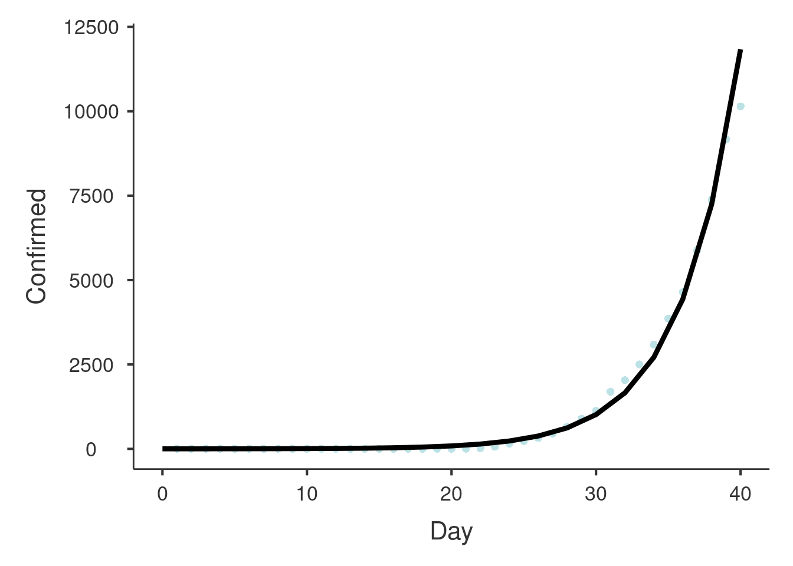
In many applications our results would be considered as satisfactory, but in this case we want to do better. First, it is clear that the confirmed cases increase at a faster rate that the predicted one. Second, the model will not work for long. The number of confirmed cases cannot increase exponentialy forever, so the model will start to grossly misfit, sooner or later. Let’s fit the same model (the input is equivalent so I’m not going to show it again) for the Mainland China data, in which the outbreak happened earlier than in Italy. For Mainland China, considering the first 40 days yields very different results as compared with Italy.
Figure 4. Simple model for Mainland China, first 40 days
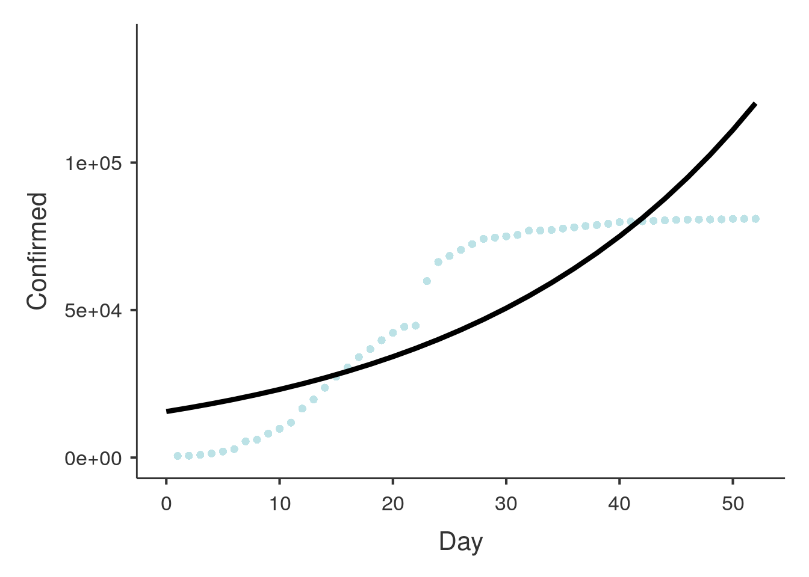
If we look at the plot and compared the predicted values (the curve) with the actual confirmed cases (cyan dots), we can see that the model does not really fit, and cannot fit the data well. We should allow the curve to bend down, or to smooth out, in order to follow the evolution of the DV over time.
Furthermore, as we can see in the recap info table, the
\(R^2\) is definitely not good for this kind of applications (<.70)
Model Info
──────────────────────────────────────────────────────────────────────────
Info Value Comment
──────────────────────────────────────────────────────────────────────────
Model Type Custom Model with custom family
Call glm Confirmed ~ 1 + Day
Link function log Coefficients are in the log(y) scale
Distribution Poisson Model for count data
R-squared 0.649 Proportion of reduction of error
AIC 459717.449 Less is better
Deviance 459053.026 Less is better
Residual DF 52.000
Converged yes Whether the estimation found a solution
──────────────────────────────────────────────────────────────────────────
The solution is polynomial regression. In polynomial regression, one adds power terms (\(x^2\) , \(x^3\) , \(x^4\) ..) in order to allow the curve to follow different paths along the time line. A squared term, for instance, allows the curve to stay flatter at the begining and stear up quickly. A cubic term allows the curve to smooth. The more polynomial terms one adds, more flexibility one allows to the curve shape.
For the present data, a polynomial regression up to the 4th grade can be enough (so far). Thus, the model is now:
\[ \hat{ln(y)}=a+b_1 \cdot x + b_2 \cdot x^2, b_3 \cdot x^3+b_4 \cdot x^4\]
We now review how to run this in jamovi GAMLj.
Replications across countries
Here are the models fitted for all available countries with more than 1000 data points. Data are update every day. The last update is 2020-03-16.
Afghanistan
R^2= 0.9560851
EC= 15
GF= 1.23
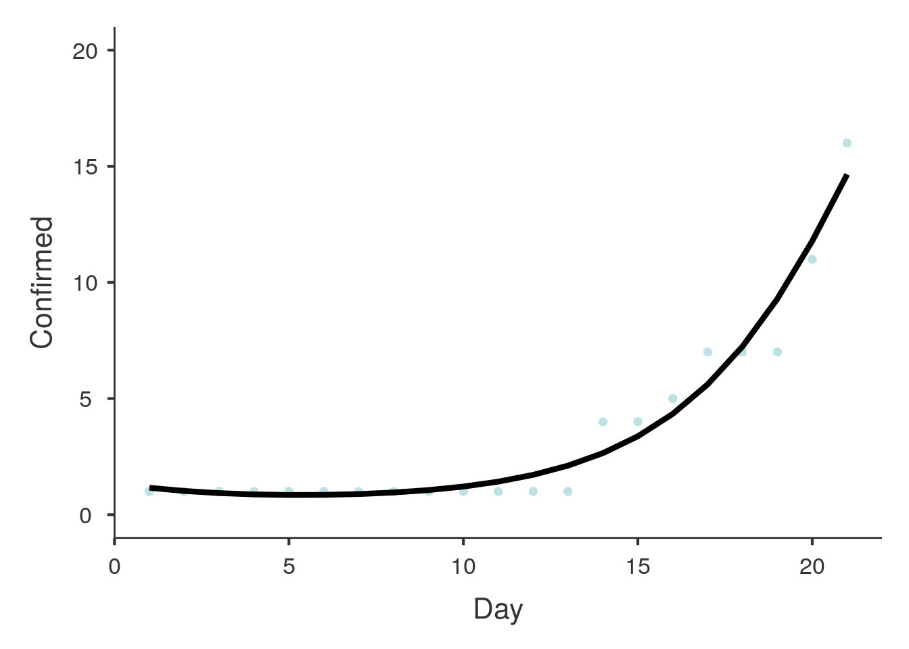
Parameter Estimates
───────────────────────────────────────────────────────────────────────────────────────
Names Estimate SE exp(B) Lower Upper z p
───────────────────────────────────────────────────────────────────────────────────────
(Intercept) 0.3043 1.31136 1.356 0.0638 12.70 0.2321 0.816
Day -0.1719 0.72941 0.842 0.2085 3.87 -0.2357 0.814
Day² 0.0143 0.11864 1.014 0.7979 1.28 0.1203 0.904
Day³ 3.72e-4 0.00733 1.000 0.9861 1.02 0.0508 0.960
Day⁴ -1.93e-5 1.53e-4 1.000 0.9997 1.00 -0.1260 0.900
───────────────────────────────────────────────────────────────────────────────────────
Algeria
R^2= 0.9821016
EC= 51
GF= 1.76
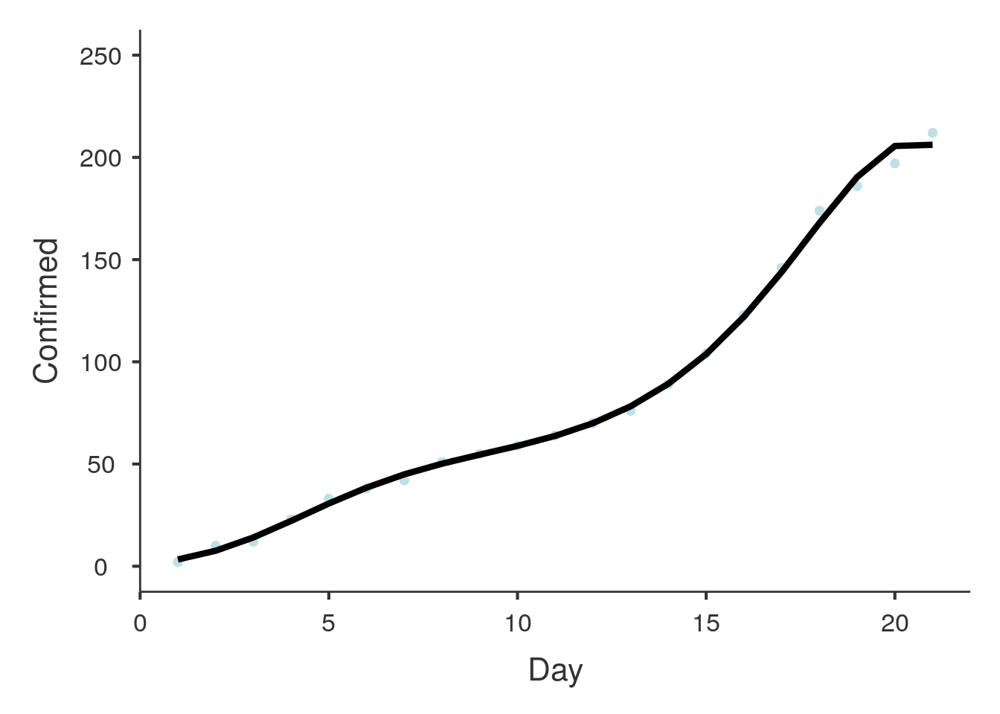
Parameter Estimates
───────────────────────────────────────────────────────────────────────────────────────
Names Estimate SE exp(B) Lower Upper z p
───────────────────────────────────────────────────────────────────────────────────────
(Intercept) 0.3778 1.28807 1.459 0.0670 12.279 0.293 0.769
Day -0.6737 0.58866 0.510 0.1745 1.850 -1.144 0.252
Day² 0.2016 0.09005 1.223 1.0138 1.451 2.239 0.025
Day³ -0.0147 0.00550 0.985 0.9750 0.996 -2.683 0.007
Day⁴ 3.40e-4 1.16e-4 1.000 1.0001 1.001 2.931 0.003
───────────────────────────────────────────────────────────────────────────────────────
Andorra
R^2= NaN
EC= 1
GF= 1
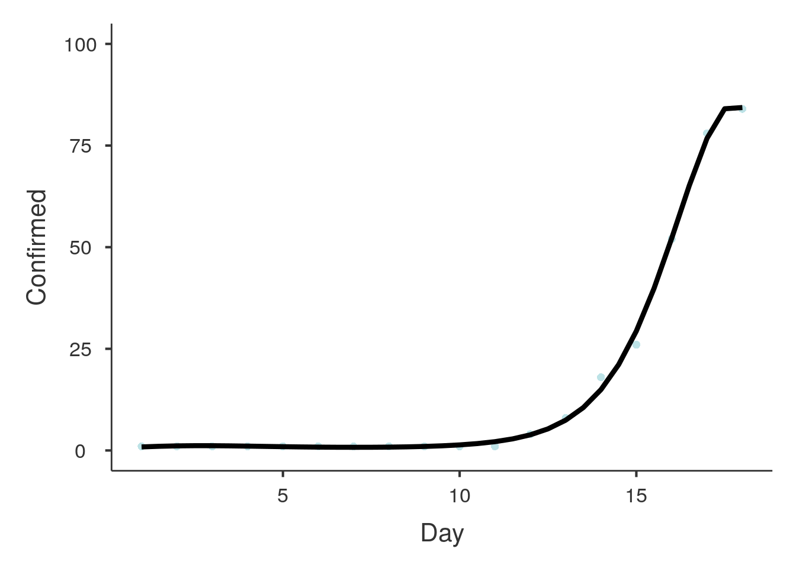
Parameter Estimates
───────────────────────────────────────────────────────────────────────────────────────────
Names Estimate SE exp(B) Lower Upper z p
───────────────────────────────────────────────────────────────────────────────────────────
(Intercept) 5.09e-18 2.19276 1.00 0.00531 44.50 2.32e-18 1.000
Day 5.25e-26 1.87311 1.00 0.02672 54.68 2.80e-26 1.000
Day² -1.09e-26 0.48419 1.00 0.36901 2.60 -2.25e-26 1.000
Day³ 9.05e-28 0.04773 1.00 0.90977 1.10 1.90e-26 1.000
Day⁴ -2.61e-29 0.00158 1.00 0.99679 1.00 -1.65e-26 1.000
───────────────────────────────────────────────────────────────────────────────────────────
Argentina
R^2= 0.971602
EC= 46
GF= 1.51
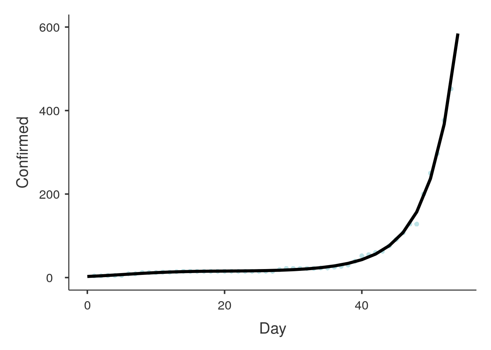
Parameter Estimates
───────────────────────────────────────────────────────────────────────────────────────
Names Estimate SE exp(B) Lower Upper z p
───────────────────────────────────────────────────────────────────────────────────────
(Intercept) -1.33766 2.1015 0.262 0.00153 7.74 -0.637 0.524
Day 0.66053 1.3559 1.936 0.17919 42.45 0.487 0.626
Day² 0.03134 0.2994 1.032 0.53838 1.79 0.105 0.917
Day³ -0.00958 0.0270 0.990 0.94168 1.05 -0.355 0.722
Day⁴ 4.32e-4 8.50e-4 1.000 0.99867 1.00 0.508 0.612
───────────────────────────────────────────────────────────────────────────────────────
Armenia
R^2= 0.9863803
EC= 27
GF= 1.48
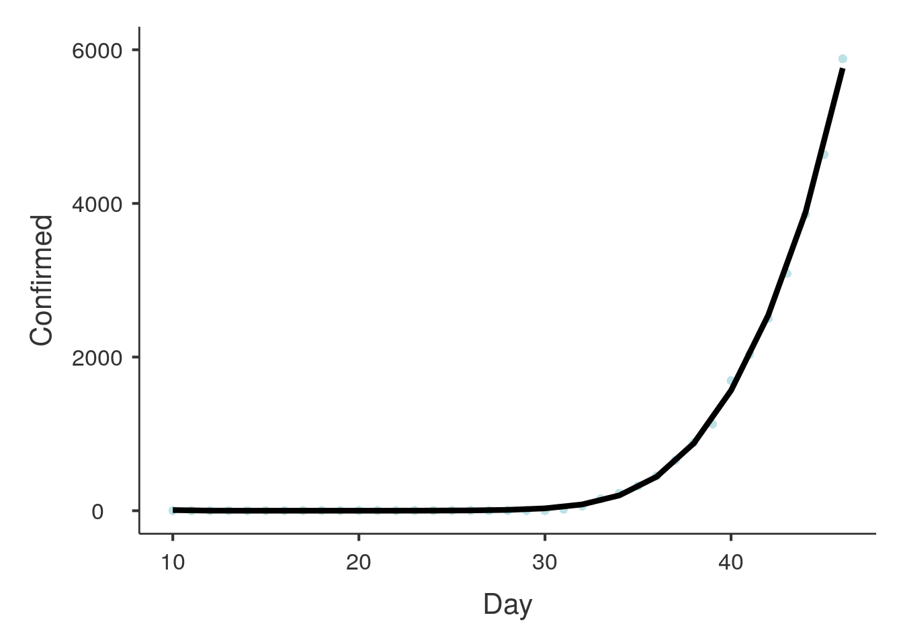
Parameter Estimates
───────────────────────────────────────────────────────────────────────────────────────
Names Estimate SE exp(B) Lower Upper z p
───────────────────────────────────────────────────────────────────────────────────────
(Intercept) -1.36175 2.0407 0.256 0.00188 7.66 -0.667 0.505
Day 1.39213 1.4439 4.023 0.27823 95.13 0.964 0.335
Day² -0.38060 0.3156 0.683 0.35115 1.24 -1.206 0.228
Day³ 0.03597 0.0266 1.037 0.98536 1.10 1.353 0.176
Day⁴ -0.00103 7.58e-4 0.999 0.99742 1.00 -1.355 0.175
───────────────────────────────────────────────────────────────────────────────────────
Australia
R^2= 0.9944647
EC= 297
GF= 1.25
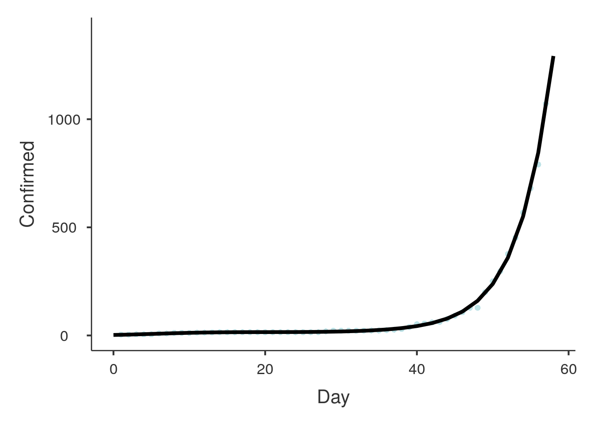
Parameter Estimates
─────────────────────────────────────────────────────────────────────────────────────
Names Estimate SE exp(B) Lower Upper z p
─────────────────────────────────────────────────────────────────────────────────────
(Intercept) 1.0028 0.31328 2.726 1.432 4.898 3.20 0.001
Day 0.2512 0.06320 1.286 1.139 1.460 3.98 < .001
Day² -0.0132 0.00408 0.987 0.979 0.995 -3.23 0.001
Day³ 2.81e-4 1.02e-4 1.000 1.000 1.000 2.75 0.006
Day⁴ -1.66e-6 8.75e-7 1.000 1.000 1.000 -1.89 0.058
─────────────────────────────────────────────────────────────────────────────────────
Austria
R^2= 0.9979684
EC= 873
GF= 1.35
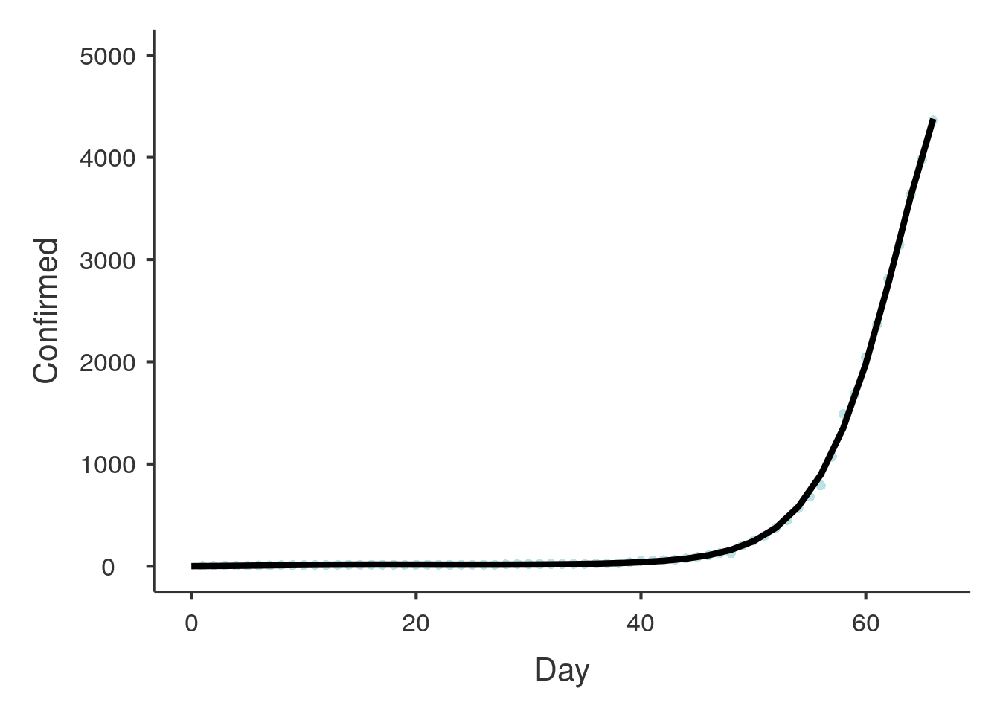
Parameter Estimates
──────────────────────────────────────────────────────────────────────────────────────
Names Estimate SE exp(B) Lower Upper z p
──────────────────────────────────────────────────────────────────────────────────────
(Intercept) -0.62851 0.83759 0.533 0.0869 2.36 -0.750 0.453
Day 0.77606 0.33111 2.173 1.1821 4.35 2.344 0.019
Day² -0.05881 0.04511 0.943 0.8593 1.03 -1.304 0.192
Day³ 0.00302 0.00253 1.003 0.9982 1.01 1.194 0.233
Day⁴ -5.46e-5 4.99e-5 1.000 0.9998 1.00 -1.093 0.274
──────────────────────────────────────────────────────────────────────────────────────
Azerbaijan
R^2= 0.9745312
EC= 23
GF= 1.61
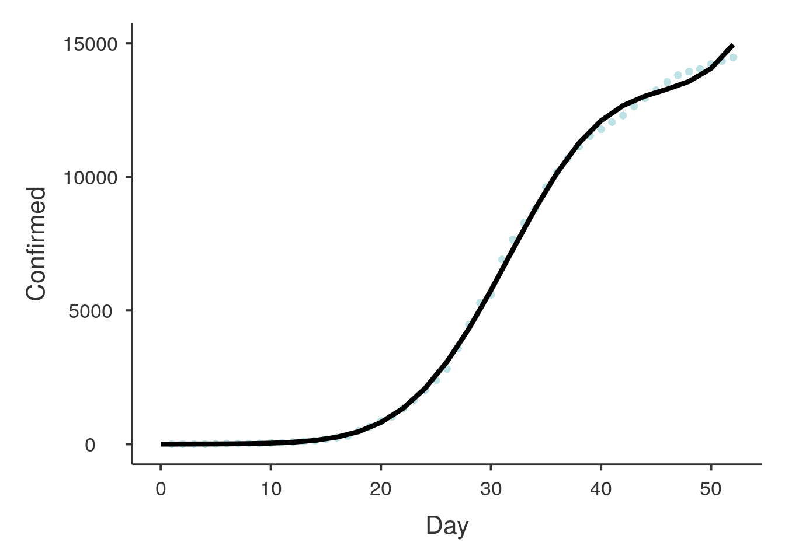
Parameter Estimates
─────────────────────────────────────────────────────────────────────────────────────
Names Estimate SE exp(B) Lower Upper z p
─────────────────────────────────────────────────────────────────────────────────────
(Intercept) 1.2924 1.0438 3.641 0.369 23.44 1.238 0.216
Day -0.3605 0.7436 0.697 0.169 3.22 -0.485 0.628
Day² 0.1467 0.1653 1.158 0.831 1.60 0.887 0.375
Day³ -0.0147 0.0143 0.985 0.958 1.01 -1.029 0.303
Day⁴ 4.70e-4 4.19e-4 1.000 1.000 1.00 1.122 0.262
─────────────────────────────────────────────────────────────────────────────────────
Bahrain
R^2= 0.9665359
EC= 202
GF= 0.85
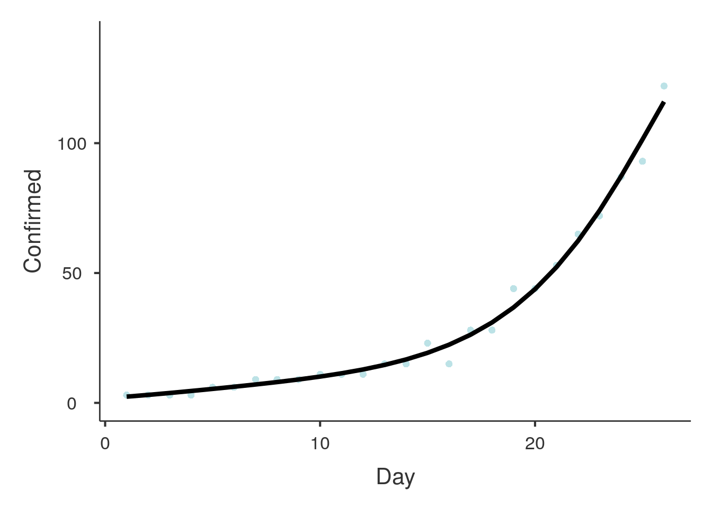
Parameter Estimates
─────────────────────────────────────────────────────────────────────────────────────
Names Estimate SE exp(B) Lower Upper z p
─────────────────────────────────────────────────────────────────────────────────────
(Intercept) 1.24575 0.36421 3.476 1.651 6.893 3.42 < .001
Day 1.03178 0.16958 2.806 2.028 3.946 6.08 < .001
Day² -0.15060 0.02578 0.860 0.817 0.904 -5.84 < .001
Day³ 0.00944 0.00155 1.009 1.006 1.013 6.08 < .001
Day⁴ -1.99e-4 3.21e-5 1.000 1.000 1.000 -6.18 < .001
─────────────────────────────────────────────────────────────────────────────────────
Belarus
R^2= 0.9221745
EC= 30
GF= 1.1
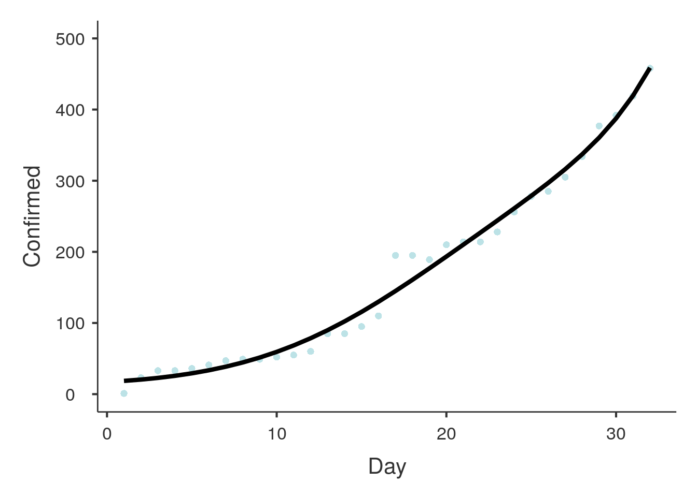
Parameter Estimates
──────────────────────────────────────────────────────────────────────────────────────
Names Estimate SE exp(B) Lower Upper z p
──────────────────────────────────────────────────────────────────────────────────────
(Intercept) -2.3611 1.9317 0.0943 9.34e-4 2.16 -1.22 0.222
Day 1.4759 1.0055 4.3749 0.753 41.70 1.47 0.142
Day² -0.2204 0.1758 0.8022 0.549 1.10 -1.25 0.210
Day³ 0.0150 0.0124 1.0151 0.992 1.04 1.20 0.228
Day⁴ -3.48e-4 3.05e-4 0.9997 0.999 1.00 -1.14 0.253
──────────────────────────────────────────────────────────────────────────────────────
Belgium
R^2= 0.9823811
EC= 824
GF= 1.18
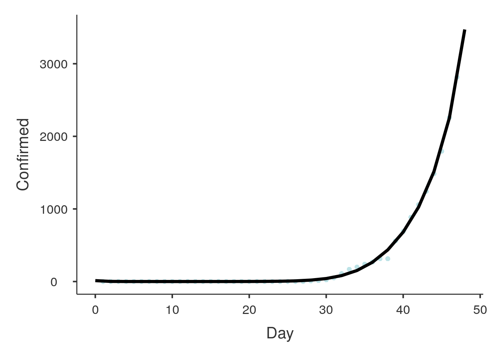
Parameter Estimates
───────────────────────────────────────────────────────────────────────────────────────
Names Estimate SE exp(B) Lower Upper z p
───────────────────────────────────────────────────────────────────────────────────────
(Intercept) 1.8585 0.5806 6.414 1.809 18.143 3.201 0.001
Day -0.7577 0.1987 0.469 0.314 0.688 -3.813 < .001
Day² 0.0480 0.0155 1.049 1.019 1.083 3.100 0.002
Day³ -8.04e-4 4.39e-4 0.999 0.998 1.000 -1.833 0.067
Day⁴ 3.80e-6 4.22e-6 1.000 1.000 1.000 0.900 0.368
───────────────────────────────────────────────────────────────────────────────────────
Bosnia and Herzegovina
R^2= 0.9917769
EC= 24
GF= 1.25
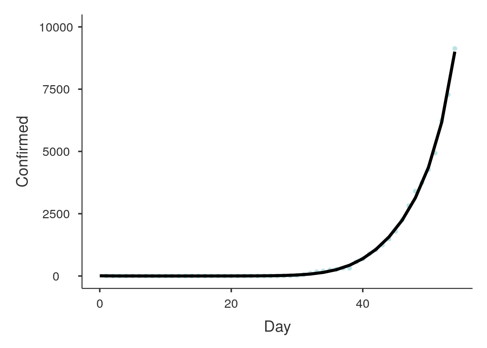
Parameter Estimates
───────────────────────────────────────────────────────────────────────────────────────
Names Estimate SE exp(B) Lower Upper z p
───────────────────────────────────────────────────────────────────────────────────────
(Intercept) 0.76510 1.71327 2.149 0.0465 46.17 0.4466 0.655
Day -0.09138 1.59783 0.913 0.0417 24.72 -0.0572 0.954
Day² 0.04766 0.46277 1.049 0.4145 2.61 0.1030 0.918
Day³ -0.00102 0.05234 0.999 0.9009 1.11 -0.0194 0.985
Day⁴ -6.88e-5 0.00203 1.000 0.9959 1.00 -0.0339 0.973
───────────────────────────────────────────────────────────────────────────────────────
Brazil
R^2= 0.9706381
EC= 172
GF= 1.08
Parameter Estimates
───────────────────────────────────────────────────────────────────────────────────────
Names Estimate SE exp(B) Lower Upper z p
───────────────────────────────────────────────────────────────────────────────────────
(Intercept) -1.54851 1.47914 0.213 0.00667 2.473 -1.05 0.295
Day 0.93464 0.66122 2.546 0.78095 10.870 1.41 0.158
Day² -0.13365 0.09864 0.875 0.71011 1.050 -1.35 0.175
Day³ 0.01000 0.00595 1.010 0.99879 1.023 1.68 0.093
Day⁴ -2.41e-4 1.26e-4 1.000 0.99950 1.000 -1.92 0.055
───────────────────────────────────────────────────────────────────────────────────────
Cambodia
R^2= 0.974049
EC= 8
GF= 1.41
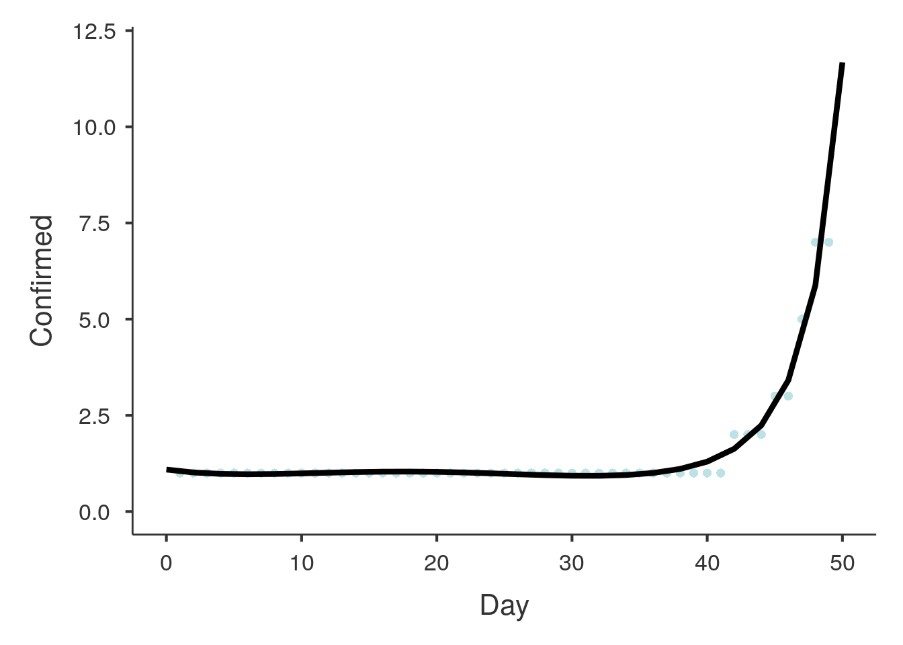
Parameter Estimates
─────────────────────────────────────────────────────────────────────────────────────
Names Estimate SE exp(B) Lower Upper z p
─────────────────────────────────────────────────────────────────────────────────────
(Intercept) 0.08665 0.7824 1.091 0.189 4.24 0.111 0.912
Day -0.04698 0.2040 0.954 0.649 1.46 -0.230 0.818
Day² 0.00598 0.0157 1.006 0.975 1.04 0.381 0.703
Day³ -2.60e-4 4.49e-4 1.000 0.999 1.00 -0.579 0.563
Day⁴ 3.56e-6 4.26e-6 1.000 1.000 1.00 0.835 0.403
─────────────────────────────────────────────────────────────────────────────────────
Canada
R^2= 0.9951605
EC= 248
GF= 1.22
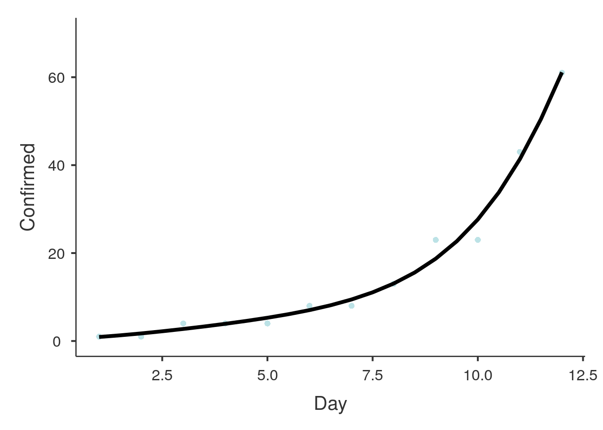
Parameter Estimates
─────────────────────────────────────────────────────────────────────────────────────
Names Estimate SE exp(B) Lower Upper z p
─────────────────────────────────────────────────────────────────────────────────────
(Intercept) -0.2647 0.52095 0.767 0.255 1.980 -0.508 0.611
Day 0.3287 0.10043 1.389 1.150 1.707 3.273 0.001
Day² -0.0186 0.00628 0.982 0.969 0.993 -2.966 0.003
Day³ 4.55e-4 1.55e-4 1.000 1.000 1.001 2.939 0.003
Day⁴ -3.36e-6 1.31e-6 1.000 1.000 1.000 -2.560 0.010
─────────────────────────────────────────────────────────────────────────────────────
Chile
R^2= 0.9885593
EC= 75
GF= 1.15
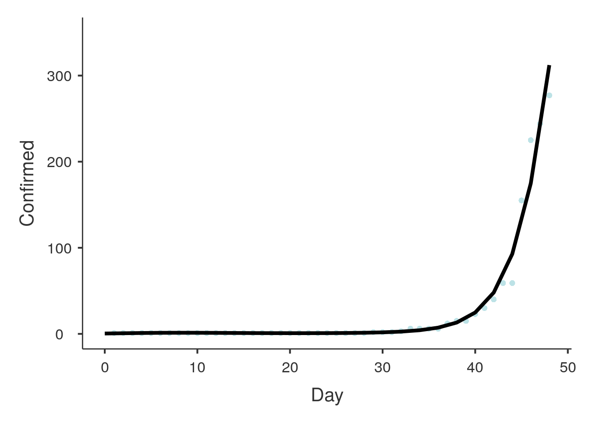
Parameter Estimates
───────────────────────────────────────────────────────────────────────────────────────
Names Estimate SE exp(B) Lower Upper z p
───────────────────────────────────────────────────────────────────────────────────────
(Intercept) -1.2017 1.7284 0.301 0.00528 5.46 -0.695 0.487
Day 1.2541 1.1659 3.505 0.42593 44.94 1.076 0.282
Day² -0.2284 0.2618 0.796 0.45827 1.30 -0.873 0.383
Day³ 0.0221 0.0237 1.022 0.97741 1.07 0.933 0.351
Day⁴ -7.27e-4 7.46e-4 0.999 0.99775 1.00 -0.975 0.330
───────────────────────────────────────────────────────────────────────────────────────
Croatia
R^2= 0.9884621
EC= 50
GF= 1.38
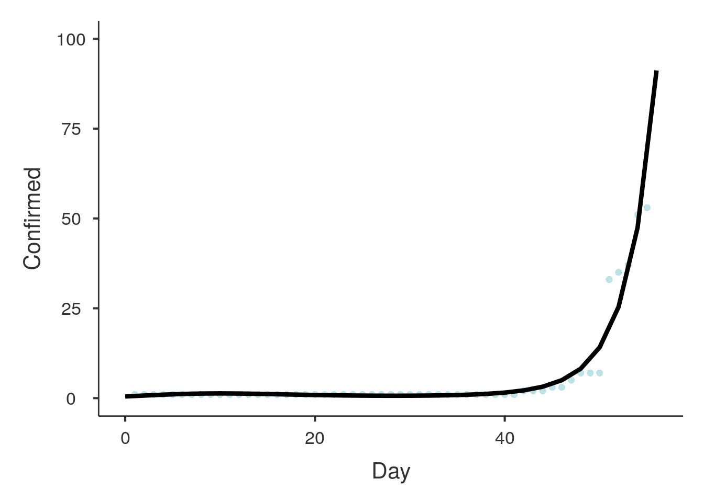
Parameter Estimates
──────────────────────────────────────────────────────────────────────────────────────
Names Estimate SE exp(B) Lower Upper z p
──────────────────────────────────────────────────────────────────────────────────────
(Intercept) -0.48181 0.98768 0.618 0.0700 3.49 -0.488 0.626
Day 0.80457 0.47348 2.236 0.9344 6.06 1.699 0.089
Day² -0.08934 0.07475 0.915 0.7843 1.05 -1.195 0.232
Day³ 0.00430 0.00468 1.004 0.9954 1.01 0.919 0.358
Day⁴ -6.49e-5 1.01e-4 1.000 0.9997 1.00 -0.643 0.520
──────────────────────────────────────────────────────────────────────────────────────
Denmark
R^2= 0.9920492
EC= 827
GF= 0.79
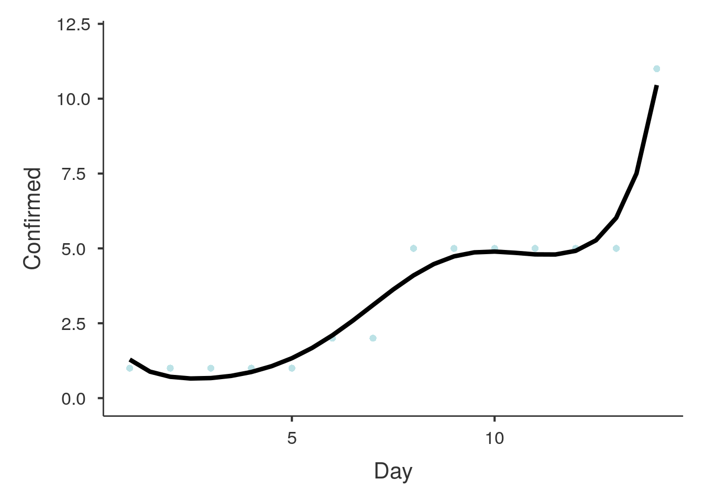
Parameter Estimates
──────────────────────────────────────────────────────────────────────────────────────
Names Estimate SE exp(B) Lower Upper z p
──────────────────────────────────────────────────────────────────────────────────────
(Intercept) 1.3049 0.79623 3.687 0.636 15.02 1.6388 0.101
Day -0.4425 0.38593 0.642 0.310 1.43 -1.1466 0.252
Day² 0.0787 0.06080 1.082 0.957 1.22 1.2938 0.196
Day³ -2.17e-4 0.00381 1.000 0.992 1.01 -0.0570 0.955
Day⁴ -1.03e-4 8.32e-5 1.000 1.000 1.00 -1.2415 0.214
──────────────────────────────────────────────────────────────────────────────────────
Dominican Republic
R^2= 0.9285776
EC= 12
GF= 1.77
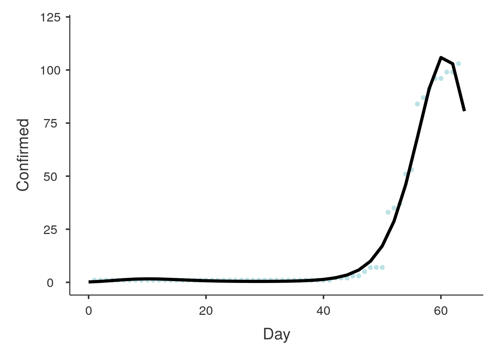
Parameter Estimates
──────────────────────────────────────────────────────────────────────────────────────
Names Estimate SE exp(B) Lower Upper z p
──────────────────────────────────────────────────────────────────────────────────────
(Intercept) 0.8032 1.7166 2.233 0.0371 41.67 0.468 0.640
Day -0.9723 1.2336 0.378 0.0355 5.16 -0.788 0.431
Day² 0.2857 0.2713 1.331 0.7679 2.27 1.053 0.292
Day³ -0.0256 0.0231 0.975 0.9311 1.02 -1.112 0.266
Day⁴ 7.62e-4 6.68e-4 1.001 0.9994 1.00 1.141 0.254
──────────────────────────────────────────────────────────────────────────────────────
Ecuador
R^2= 0.9476822
EC= 30
GF= 1.34
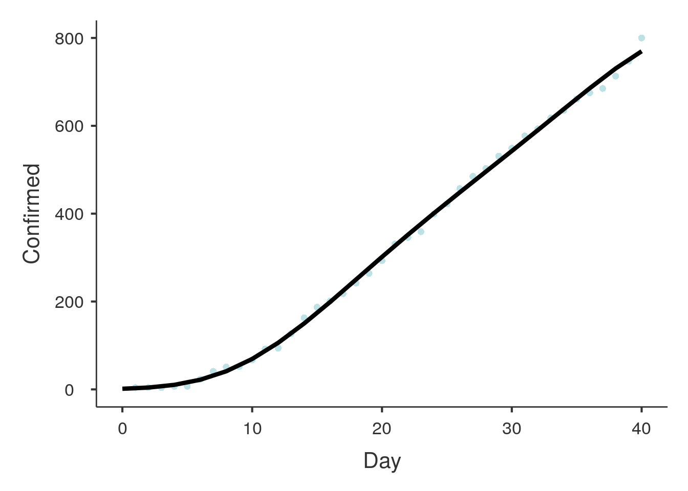
Parameter Estimates
──────────────────────────────────────────────────────────────────────────────────────
Names Estimate SE exp(B) Lower Upper z p
──────────────────────────────────────────────────────────────────────────────────────
(Intercept) 1.3578 0.7696 3.888 0.760 15.84 1.7643 0.078
Day 0.3136 0.5466 1.368 0.483 4.16 0.5736 0.566
Day² -0.0189 0.1228 0.981 0.767 1.24 -0.1541 0.878
Day³ -5.29e-4 0.0107 0.999 0.979 1.02 -0.0492 0.961
Day⁴ 6.67e-5 3.19e-4 1.000 0.999 1.00 0.2092 0.834
──────────────────────────────────────────────────────────────────────────────────────
Egypt
R^2= 0.96773
EC= 100
GF= 0.93
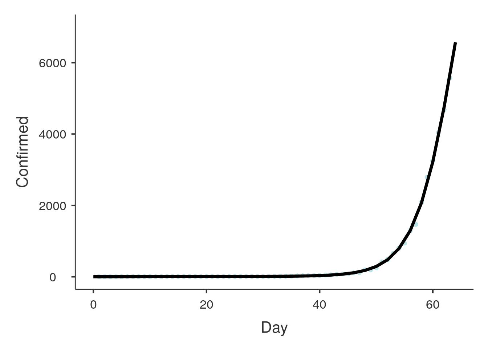
Parameter Estimates
──────────────────────────────────────────────────────────────────────────────────────
Names Estimate SE exp(B) Lower Upper z p
──────────────────────────────────────────────────────────────────────────────────────
(Intercept) 0.66254 0.85194 1.940 0.286 8.56 0.7777 0.437
Day -0.23408 0.32066 0.791 0.424 1.52 -0.7300 0.465
Day² 0.00322 0.03317 1.003 0.940 1.07 0.0970 0.923
Day³ 0.00113 0.00130 1.001 0.999 1.00 0.8684 0.385
Day⁴ -2.76e-5 1.74e-5 1.000 1.000 1.00 -1.5896 0.112
──────────────────────────────────────────────────────────────────────────────────────
Estonia
R^2= 0.9648467
EC= 182
GF= 1.78
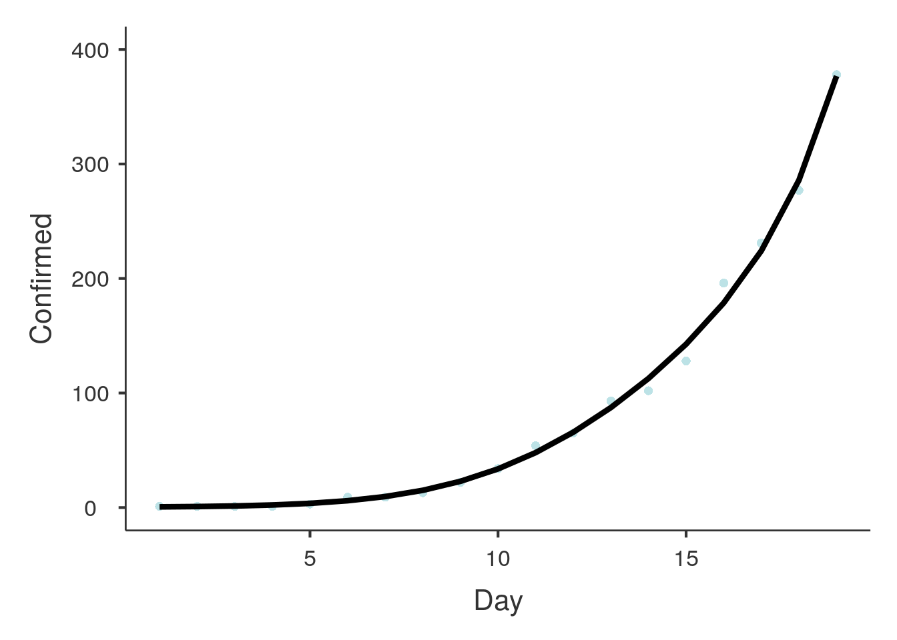
Parameter Estimates
───────────────────────────────────────────────────────────────────────────────────────
Names Estimate SE exp(B) Lower Upper z p
───────────────────────────────────────────────────────────────────────────────────────
(Intercept) -1.86579 1.75629 0.155 0.00229 2.67 -1.062 0.288
Day 1.00264 0.83428 2.725 0.62617 17.63 1.202 0.229
Day² -0.13013 0.13241 0.878 0.66071 1.12 -0.983 0.326
Day³ 0.00824 0.00848 1.008 0.99240 1.03 0.971 0.331
Day⁴ -1.61e-4 1.89e-4 1.000 0.99945 1.00 -0.848 0.396
───────────────────────────────────────────────────────────────────────────────────────
Finland
R^2= 0.9893246
EC= 274
GF= 1.48
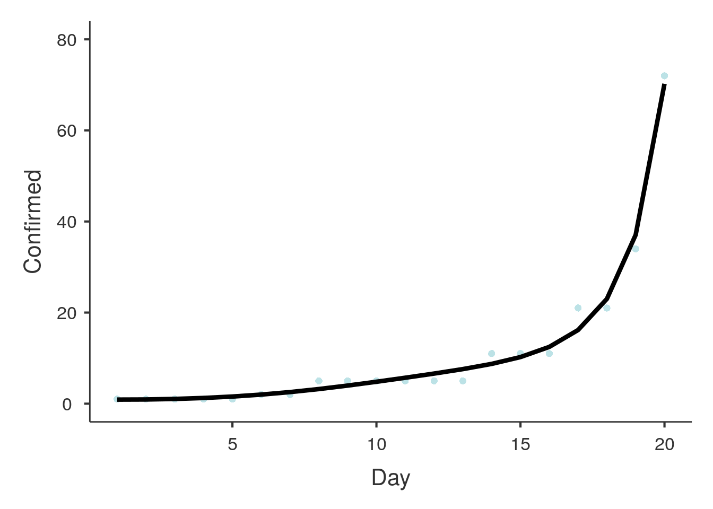
Parameter Estimates
─────────────────────────────────────────────────────────────────────────────────────
Names Estimate SE exp(B) Lower Upper z p
─────────────────────────────────────────────────────────────────────────────────────
(Intercept) -0.2542 0.7658 0.776 0.141 2.95 -0.332 0.740
Day 0.1174 0.1783 1.125 0.804 1.63 0.659 0.510
Day² -0.0127 0.0123 0.987 0.963 1.01 -1.037 0.300
Day³ 4.33e-4 3.24e-4 1.000 1.000 1.00 1.338 0.181
Day⁴ -3.37e-6 2.89e-6 1.000 1.000 1.00 -1.166 0.243
─────────────────────────────────────────────────────────────────────────────────────
France
R^2= 0.9955409
EC= 4662
GF= 1.11
Parameter Estimates
───────────────────────────────────────────────────────────────────────────────────────
Names Estimate SE exp(B) Lower Upper z p
───────────────────────────────────────────────────────────────────────────────────────
(Intercept) -0.09916 0.38164 0.906 0.412 1.842 -0.260 0.795
Day 0.46697 0.06557 1.595 1.408 1.821 7.121 < .001
Day² -0.03542 0.00356 0.965 0.958 0.972 -9.951 < .001
Day³ 0.00105 7.70e-5 1.001 1.001 1.001 13.600 < .001
Day⁴ -9.20e-6 5.81e-7 1.000 1.000 1.000 -15.827 < .001
───────────────────────────────────────────────────────────────────────────────────────
Georgia
R^2= 0.9677164
EC= 31
GF= 0.98
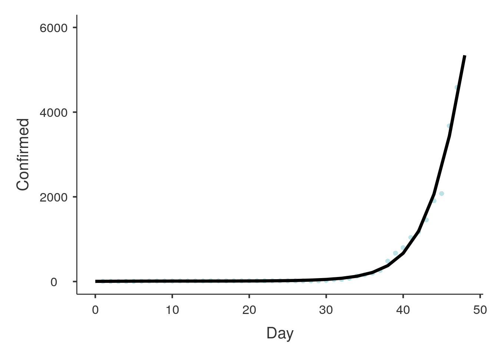
Parameter Estimates
───────────────────────────────────────────────────────────────────────────────────────
Names Estimate SE exp(B) Lower Upper z p
───────────────────────────────────────────────────────────────────────────────────────
(Intercept) -0.08330 1.29551 0.920 0.0449 8.20 -0.0643 0.949
Day 0.07805 0.67028 1.081 0.3128 4.54 0.1164 0.907
Day² 0.00865 0.11061 1.009 0.8030 1.25 0.0782 0.938
Day³ 5.63e-4 0.00718 1.001 0.9868 1.02 0.0783 0.938
Day⁴ -3.79e-5 1.60e-4 1.000 0.9996 1.00 -0.2361 0.813
───────────────────────────────────────────────────────────────────────────────────────
Germany
R^2= 0.9942693
EC= 5656
GF= 1.25
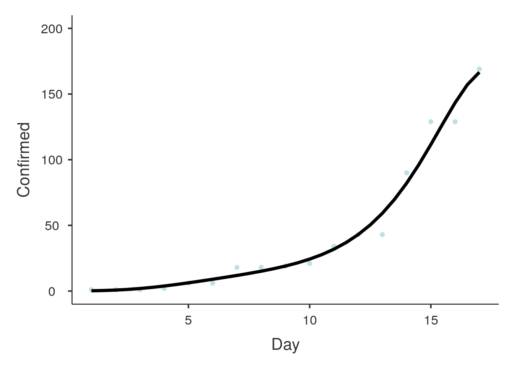
Parameter Estimates
─────────────────────────────────────────────────────────────────────────────────────
Names Estimate SE exp(B) Lower Upper z p
─────────────────────────────────────────────────────────────────────────────────────
(Intercept) 1.6054 0.25769 4.980 2.942 8.088 6.23 < .001
Day 0.1743 0.05179 1.190 1.077 1.320 3.37 < .001
Day² -0.0156 0.00321 0.984 0.978 0.991 -4.87 < .001
Day³ 5.81e-4 7.80e-5 1.001 1.000 1.001 7.45 < .001
Day⁴ -5.57e-6 6.53e-7 1.000 1.000 1.000 -8.53 < .001
─────────────────────────────────────────────────────────────────────────────────────
Greece
R^2= 0.9840733
EC= 341
GF= 1.68
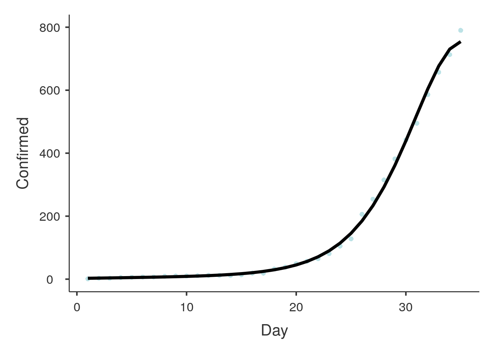
Parameter Estimates
──────────────────────────────────────────────────────────────────────────────────────
Names Estimate SE exp(B) Lower Upper z p
──────────────────────────────────────────────────────────────────────────────────────
(Intercept) 0.9111 0.81745 2.487 0.410 10.474 1.115 0.265
Day -0.3018 0.37224 0.739 0.371 1.614 -0.811 0.417
Day² 0.1345 0.05724 1.144 1.018 1.276 2.350 0.019
Day³ -0.0102 0.00354 0.990 0.983 0.997 -2.883 0.004
Day⁴ 2.47e-4 7.64e-5 1.000 1.000 1.000 3.233 0.001
──────────────────────────────────────────────────────────────────────────────────────
Hong Kong
R^2= 0.9906541
EC= 116
GF= 1.03
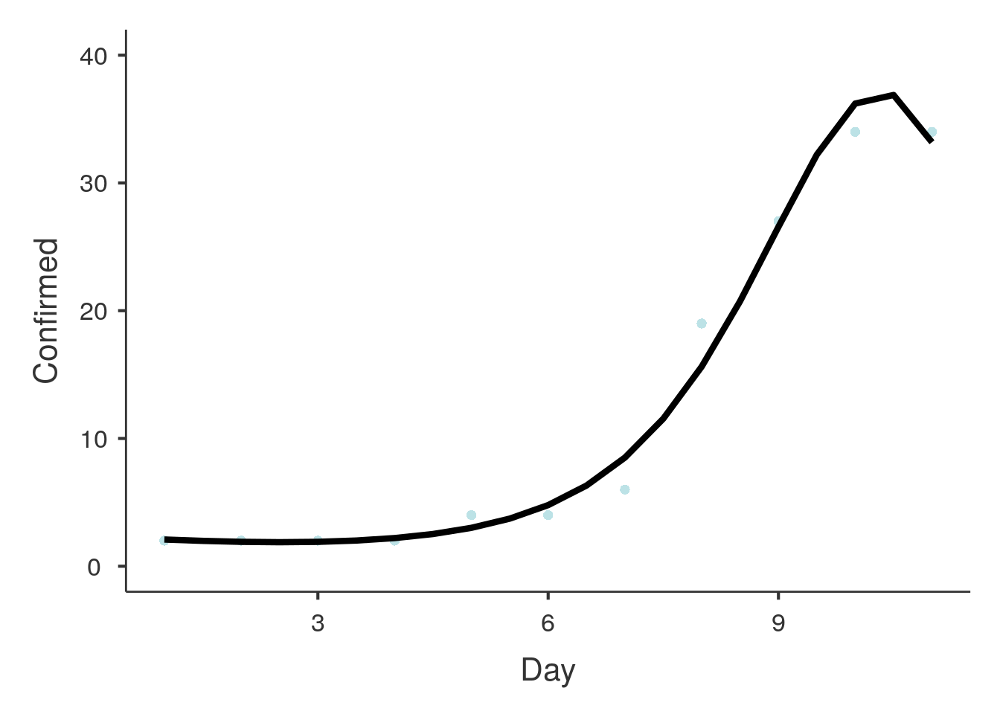
Parameter Estimates
──────────────────────────────────────────────────────────────────────────────────────
Names Estimate SE exp(B) Lower Upper z p
──────────────────────────────────────────────────────────────────────────────────────
(Intercept) 0.90873 0.33542 2.481 1.242 4.64 2.7092 0.007
Day 0.20238 0.06768 1.224 1.076 1.40 2.9901 0.003
Day² -0.00333 0.00457 0.997 0.988 1.01 -0.7289 0.466
Day³ 2.66e-6 1.23e-4 1.000 1.000 1.00 0.0216 0.983
Day⁴ 2.90e-7 1.15e-6 1.000 1.000 1.00 0.2524 0.801
──────────────────────────────────────────────────────────────────────────────────────
Hungary
R^2= 0.9730196
EC= 34
GF= 1.33
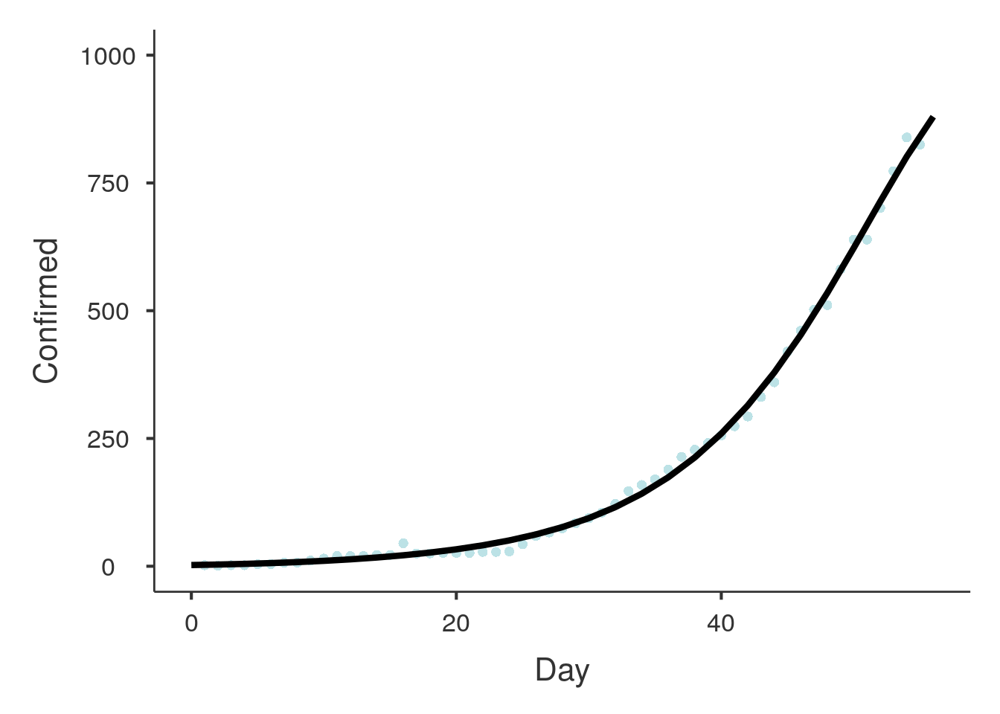
Parameter Estimates
───────────────────────────────────────────────────────────────────────────────────────
Names Estimate SE exp(B) Lower Upper z p
───────────────────────────────────────────────────────────────────────────────────────
(Intercept) 0.0452 1.60373 1.046 0.0267 16.82 0.0282 0.978
Day 0.4020 1.27454 1.495 0.1385 22.47 0.3154 0.752
Day² -0.0112 0.32836 0.989 0.5037 1.86 -0.0341 0.973
Day³ -4.52e-4 0.03355 1.000 0.9366 1.07 -0.0135 0.989
Day⁴ 5.04e-5 0.00118 1.000 0.9977 1.00 0.0426 0.966
───────────────────────────────────────────────────────────────────────────────────────
Iceland
R^2= 0.9933975
EC= 174
GF= 1.09
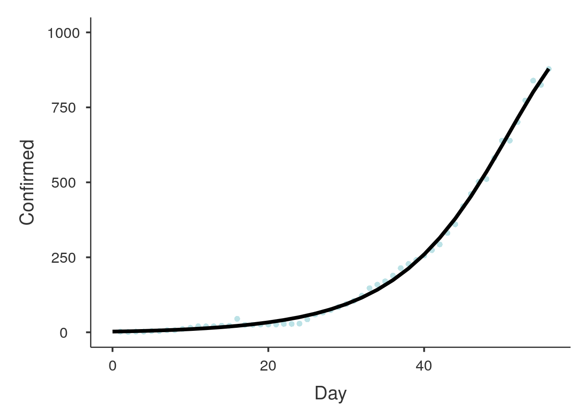
Parameter Estimates
─────────────────────────────────────────────────────────────────────────────────────────
Names Estimate SE exp(B) Lower Upper z p
─────────────────────────────────────────────────────────────────────────────────────────
(Intercept) -4.1136 1.52010 0.0163 6.02e-4 0.234 -2.71 0.007
Day 2.5576 0.68059 12.9054 3.794 54.723 3.76 < .001
Day² -0.3212 0.10685 0.7253 0.580 0.882 -3.01 0.003
Day³ 0.0185 0.00700 1.0187 1.005 1.033 2.64 0.008
Day⁴ -3.85e-4 1.63e-4 0.9996 0.999 1.000 -2.37 0.018
─────────────────────────────────────────────────────────────────────────────────────────
India
R^2= 0.9745178
EC= 105
GF= 1.03
Parameter Estimates
─────────────────────────────────────────────────────────────────────────────────────
Names Estimate SE exp(B) Lower Upper z p
─────────────────────────────────────────────────────────────────────────────────────
(Intercept) -0.71022 0.6516 0.492 0.122 1.583 -1.09 0.276
Day 0.49789 0.1456 1.645 1.252 2.221 3.42 < .001
Day² -0.04294 0.0102 0.958 0.938 0.977 -4.21 < .001
Day³ 0.00137 2.79e-4 1.001 1.001 1.002 4.91 < .001
Day⁴ -1.34e-5 2.59e-6 1.000 1.000 1.000 -5.15 < .001
─────────────────────────────────────────────────────────────────────────────────────
Indonesia
R^2= 0.983398
EC= 121
GF= 1.39
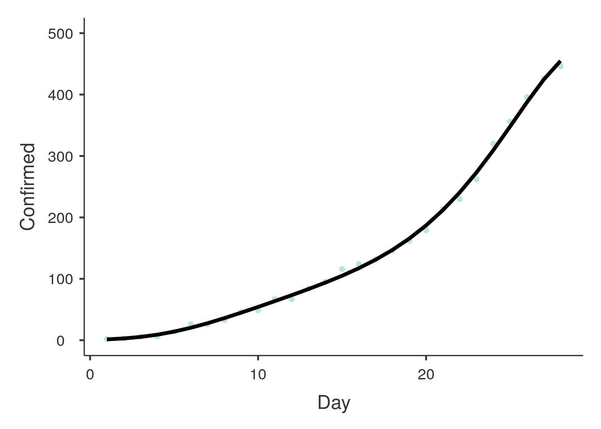
Parameter Estimates
──────────────────────────────────────────────────────────────────────────────────────
Names Estimate SE exp(B) Lower Upper z p
──────────────────────────────────────────────────────────────────────────────────────
(Intercept) 1.2643 1.2016 3.541 0.2364 29.08 1.052 0.293
Day -0.7396 0.8310 0.477 0.0982 2.68 -0.890 0.373
Day² 0.2205 0.1806 1.247 0.8668 1.77 1.221 0.222
Day³ -0.0167 0.0154 0.983 0.9541 1.01 -1.084 0.278
Day⁴ 4.30e-4 4.54e-4 1.000 0.9995 1.00 0.948 0.343
──────────────────────────────────────────────────────────────────────────────────────
Iran
R^2= 0.9990594
EC= 14286
GF= 1.18
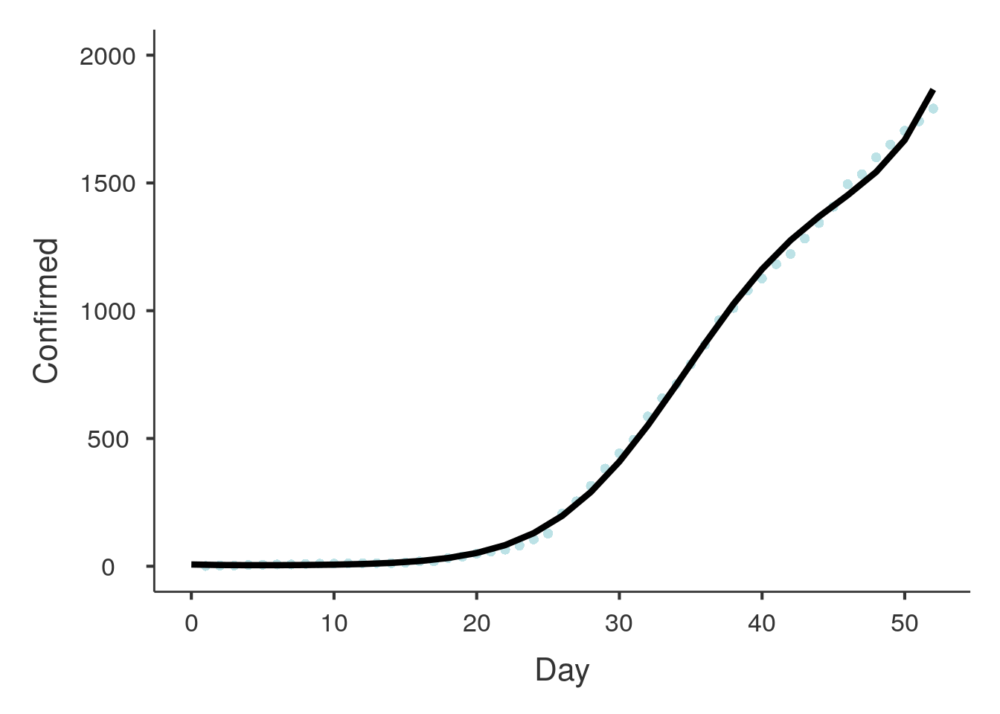
Parameter Estimates
──────────────────────────────────────────────────────────────────────────────────────
Names Estimate SE exp(B) Lower Upper z p
──────────────────────────────────────────────────────────────────────────────────────
(Intercept) 1.18152 0.26793 3.259 1.896 5.421 4.41 < .001
Day 0.32013 0.07096 1.377 1.203 1.588 4.51 < .001
Day² 0.03998 0.00678 1.041 1.027 1.054 5.89 < .001
Day³ -0.00283 2.76e-4 0.997 0.997 0.998 -10.26 < .001
Day⁴ 4.97e-5 4.03e-6 1.000 1.000 1.000 12.34 < .001
──────────────────────────────────────────────────────────────────────────────────────
Iraq
R^2= 0.9882762
EC= 120
GF= 1.14
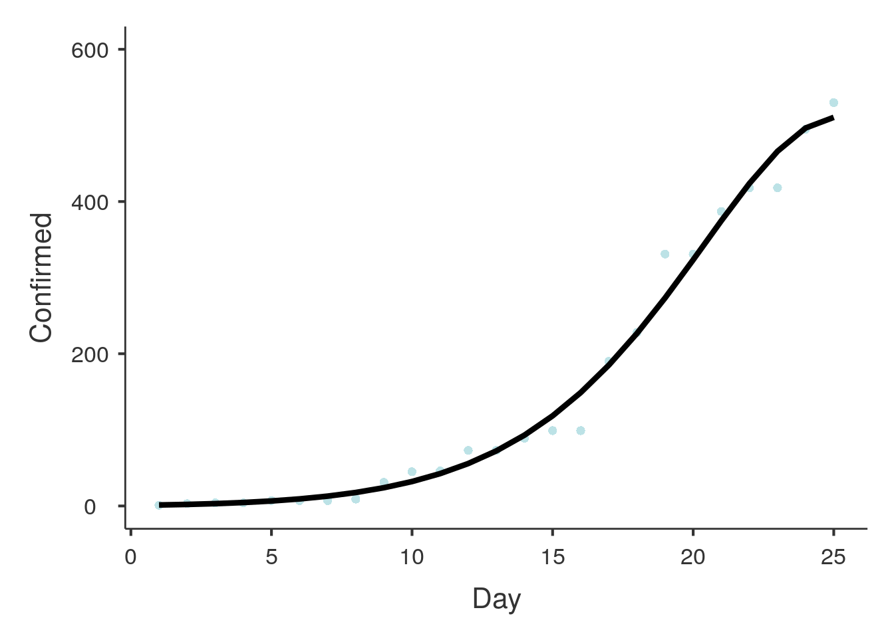
Parameter Estimates
──────────────────────────────────────────────────────────────────────────────────────
Names Estimate SE exp(B) Lower Upper z p
──────────────────────────────────────────────────────────────────────────────────────
(Intercept) -1.05344 0.90147 0.349 0.0495 1.73 -1.169 0.243
Day 0.98074 0.36189 2.666 1.3731 5.71 2.710 0.007
Day² -0.07724 0.04995 0.926 0.8351 1.02 -1.546 0.122
Day³ 0.00291 0.00282 1.003 0.9976 1.01 1.031 0.303
Day⁴ -3.92e-5 5.58e-5 1.000 0.9998 1.00 -0.702 0.483
──────────────────────────────────────────────────────────────────────────────────────
Ireland
R^2= 0.9750307
EC= 138
GF= 1.15
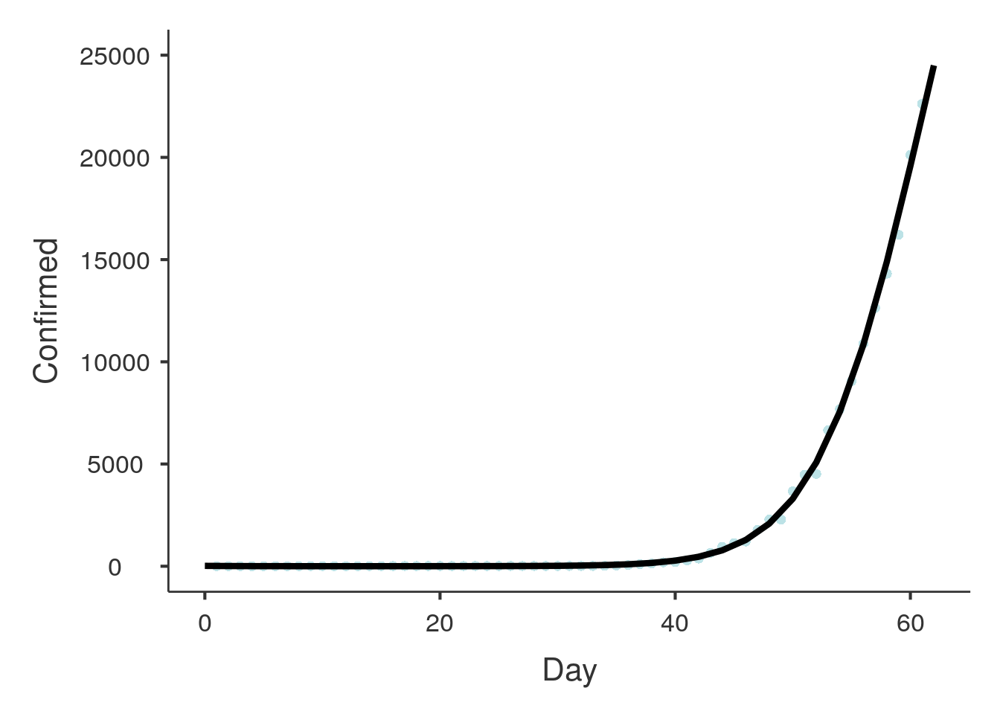
Parameter Estimates
───────────────────────────────────────────────────────────────────────────────────────
Names Estimate SE exp(B) Lower Upper z p
───────────────────────────────────────────────────────────────────────────────────────
(Intercept) -3.8066 2.0406 0.0222 2.01e-4 0.638 -1.87 0.062
Day 2.2692 0.9846 9.6719 1.759 85.609 2.30 0.021
Day² -0.3223 0.1651 0.7245 0.508 0.974 -1.95 0.051
Day³ 0.0217 0.0115 1.0219 1.001 1.047 1.89 0.059
Day⁴ -5.17e-4 2.83e-4 0.9995 0.999 1.000 -1.83 0.068
───────────────────────────────────────────────────────────────────────────────────────
Israel
R^2= 0.9921154
EC= 247
GF= 1.17
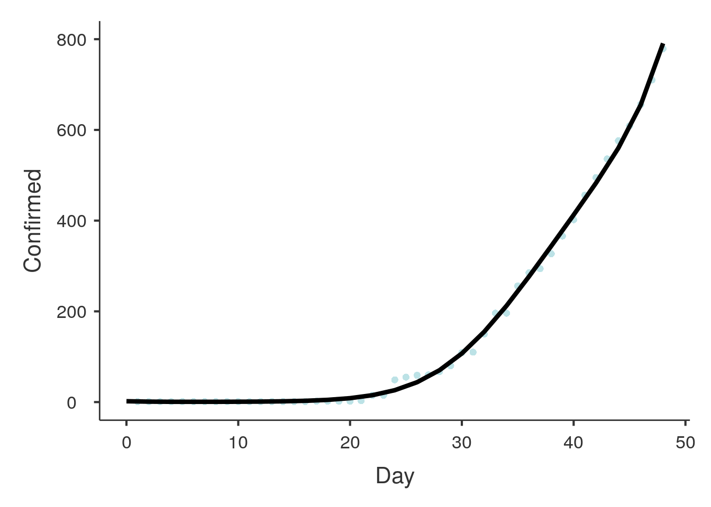
Parameter Estimates
──────────────────────────────────────────────────────────────────────────────────────
Names Estimate SE exp(B) Lower Upper z p
──────────────────────────────────────────────────────────────────────────────────────
(Intercept) -1.98410 1.30001 0.138 0.00710 1.231 -1.53 0.127
Day 0.90319 0.44082 2.467 1.12489 6.438 2.05 0.040
Day² -0.08893 0.05092 0.915 0.82167 1.005 -1.75 0.081
Day³ 0.00461 0.00241 1.005 1.00011 1.010 1.91 0.056
Day⁴ -8.03e-5 3.99e-5 1.000 0.99984 1.000 -2.01 0.044
──────────────────────────────────────────────────────────────────────────────────────
Italy
R^2= 0.9982866
EC= 25213
GF= 1.24
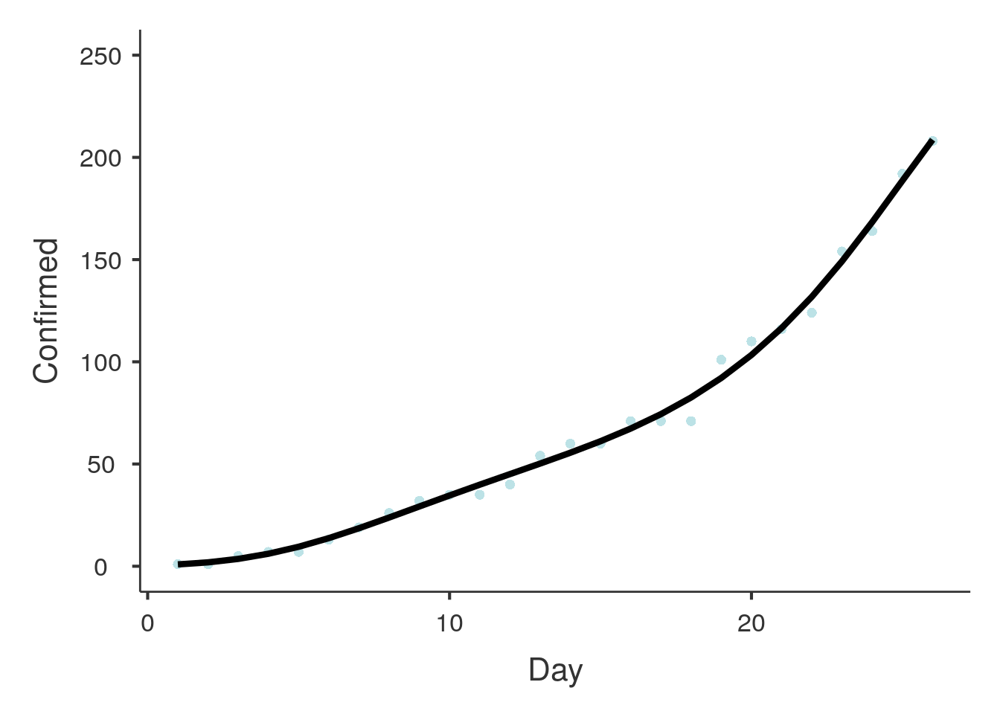
Parameter Estimates
───────────────────────────────────────────────────────────────────────────────────────
Names Estimate SE exp(B) Lower Upper z p
───────────────────────────────────────────────────────────────────────────────────────
(Intercept) 2.34410 0.38305 10.424 4.565 20.729 6.12 < .001
Day -0.87083 0.05665 0.419 0.377 0.471 -15.37 < .001
Day² 0.07815 0.00318 1.081 1.074 1.088 24.57 < .001
Day³ -0.00195 7.48e-5 0.998 0.998 0.998 -26.05 < .001
Day⁴ 1.62e-5 6.24e-7 1.000 1.000 1.000 25.92 < .001
───────────────────────────────────────────────────────────────────────────────────────
Japan
R^2= 0.9932867
EC= 813
GF= 1.06
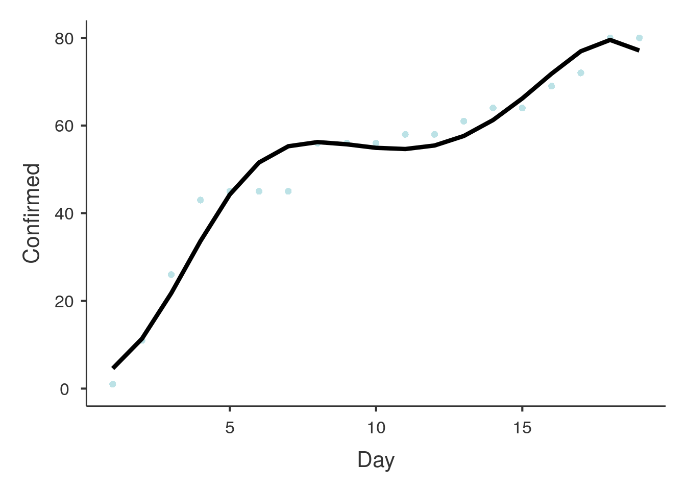
Parameter Estimates
─────────────────────────────────────────────────────────────────────────────────────
Names Estimate SE exp(B) Lower Upper z p
─────────────────────────────────────────────────────────────────────────────────────
(Intercept) 0.89859 0.29419 2.456 1.343 4.26 3.05 0.002
Day 0.16991 0.04737 1.185 1.083 1.30 3.59 < .001
Day² -0.00314 0.00258 0.997 0.992 1.00 -1.22 0.223
Day³ 6.92e-5 5.68e-5 1.000 1.000 1.00 1.22 0.223
Day⁴ -6.00e-7 4.35e-7 1.000 1.000 1.00 -1.38 0.169
─────────────────────────────────────────────────────────────────────────────────────
Jordan
R^2= 0.9567741
EC= 8
GF= 7.19
Parameter Estimates
────────────────────────────────────────────────────────────────────────────────────────
Names Estimate SE exp(B) Lower Upper z p
────────────────────────────────────────────────────────────────────────────────────────
(Intercept) 0.98115 2.23968 2.668 0.01375 143.98 0.438 0.661
Day -1.22134 2.05358 0.295 0.00494 21.15 -0.595 0.552
Day² 0.41850 0.55914 1.520 0.49666 4.73 0.748 0.454
Day³ -0.05246 0.05771 0.949 0.84321 1.06 -0.909 0.363
Day⁴ 0.00215 0.00200 1.002 0.99828 1.01 1.077 0.281
────────────────────────────────────────────────────────────────────────────────────────
Kuwait
R^2= 0.9455016
EC= 108
GF= 1.05
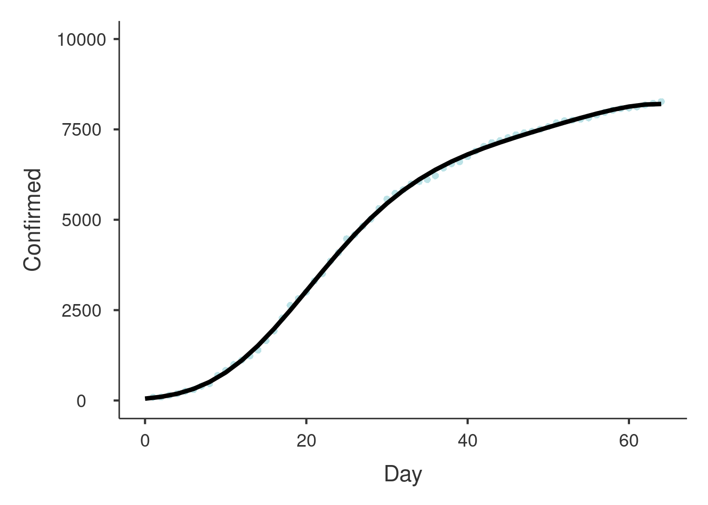
Parameter Estimates
─────────────────────────────────────────────────────────────────────────────────────
Names Estimate SE exp(B) Lower Upper z p
─────────────────────────────────────────────────────────────────────────────────────
(Intercept) 0.71683 0.42535 2.048 0.855 4.538 1.69 0.092
Day 1.13432 0.19603 3.109 2.141 4.620 5.79 < .001
Day² -0.13771 0.03004 0.871 0.821 0.923 -4.58 < .001
Day³ 0.00699 0.00183 1.007 1.003 1.011 3.81 < .001
Day⁴ -1.23e-4 3.85e-5 1.000 1.000 1.000 -3.19 0.001
─────────────────────────────────────────────────────────────────────────────────────
Latvia
R^2= 0.9779611
EC= 31
GF= 1.39
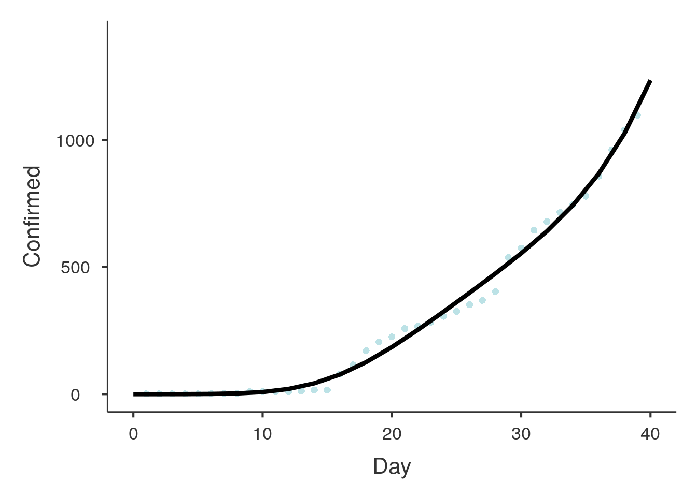
Parameter Estimates
──────────────────────────────────────────────────────────────────────────────────────
Names Estimate SE exp(B) Lower Upper z p
──────────────────────────────────────────────────────────────────────────────────────
(Intercept) 0.9609 1.7416 2.614 0.0422 52.83 0.552 0.581
Day -1.0511 1.3115 0.350 0.0272 5.43 -0.801 0.423
Day² 0.2675 0.2966 1.307 0.7207 2.36 0.902 0.367
Day³ -0.0202 0.0260 0.980 0.9304 1.03 -0.778 0.437
Day⁴ 5.25e-4 7.77e-4 1.001 0.9990 1.00 0.675 0.500
──────────────────────────────────────────────────────────────────────────────────────
Lebanon
R^2= 0.9882455
EC= 113
GF= 1.25
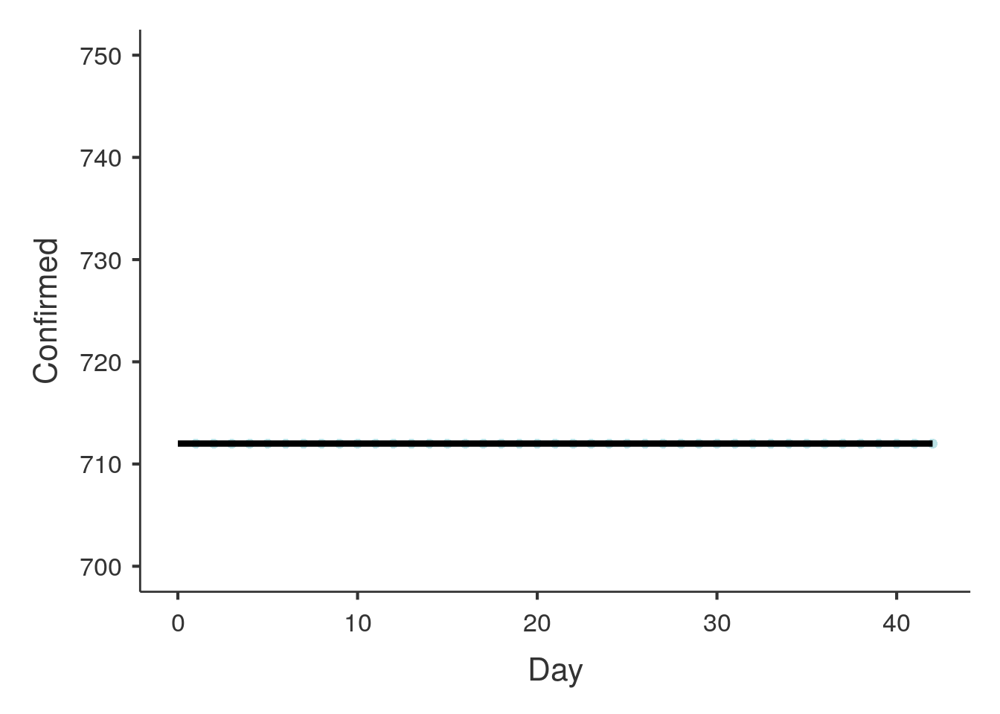
Parameter Estimates
──────────────────────────────────────────────────────────────────────────────────────
Names Estimate SE exp(B) Lower Upper z p
──────────────────────────────────────────────────────────────────────────────────────
(Intercept) -0.78746 1.20204 0.455 0.0278 3.39 -0.655 0.512
Day 0.21847 0.42943 1.244 0.5758 3.18 0.509 0.611
Day² 0.01365 0.05200 1.014 0.9086 1.12 0.262 0.793
Day³ -0.00106 0.00255 0.999 0.9941 1.00 -0.418 0.676
Day⁴ 2.15e-5 4.35e-5 1.000 0.9999 1.00 0.493 0.622
──────────────────────────────────────────────────────────────────────────────────────
Liechtenstein
R^2= 0.8570733
EC= 4
GF= 1.61
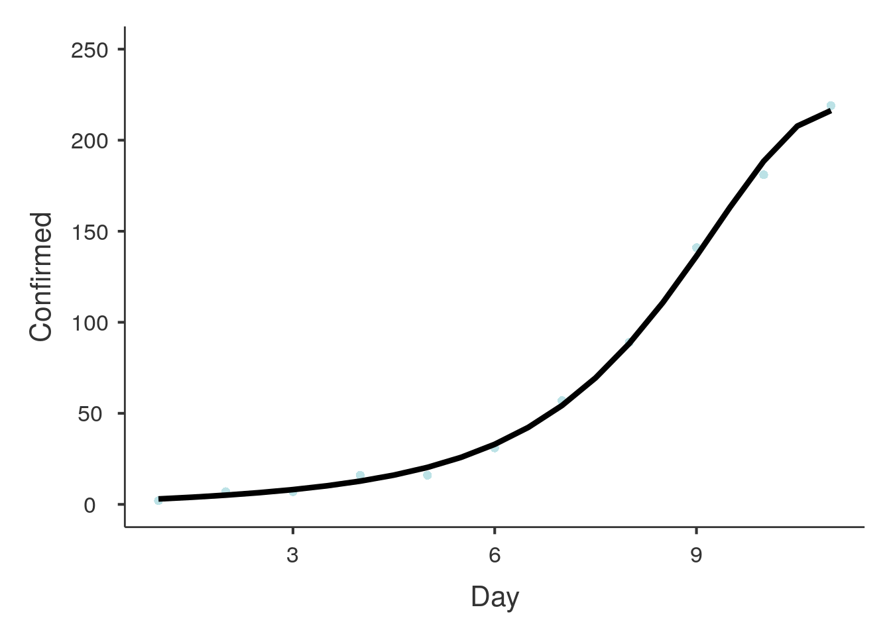
Parameter Estimates
────────────────────────────────────────────────────────────────────────────────────────
Names Estimate SE exp(B) Lower Upper z p
────────────────────────────────────────────────────────────────────────────────────────
(Intercept) -0.5933 2.57702 0.553 0.00110 48.03 -0.230 0.818
Day 0.6874 2.38853 1.989 0.02000 349.53 0.288 0.774
Day² -0.2136 0.68109 0.808 0.19620 3.08 -0.314 0.754
Day³ 0.0228 0.07451 1.023 0.88308 1.19 0.306 0.760
Day⁴ -7.13e-4 0.00275 0.999 0.99375 1.00 -0.259 0.795
────────────────────────────────────────────────────────────────────────────────────────
Lithuania
R^2= 0.9822468
EC= 12
GF= 1.43
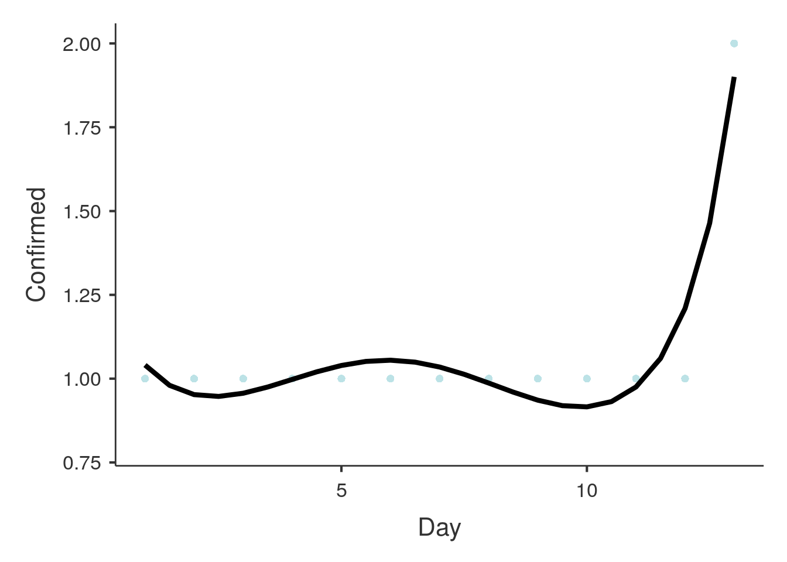
Parameter Estimates
───────────────────────────────────────────────────────────────────────────────────────
Names Estimate SE exp(B) Lower Upper z p
───────────────────────────────────────────────────────────────────────────────────────
(Intercept) -0.5257 1.7472 0.591 0.00919 11.16 -0.301 0.764
Day 0.5187 1.1556 1.680 0.19201 20.24 0.449 0.654
Day² -0.1326 0.2318 0.876 0.54121 1.37 -0.572 0.567
Day³ 0.0114 0.0177 1.012 0.97742 1.05 0.645 0.519
Day⁴ -2.84e-4 4.58e-4 1.000 0.99879 1.00 -0.620 0.535
───────────────────────────────────────────────────────────────────────────────────────
Luxembourg
R^2= 0.9936698
EC= 60
GF= 1.02
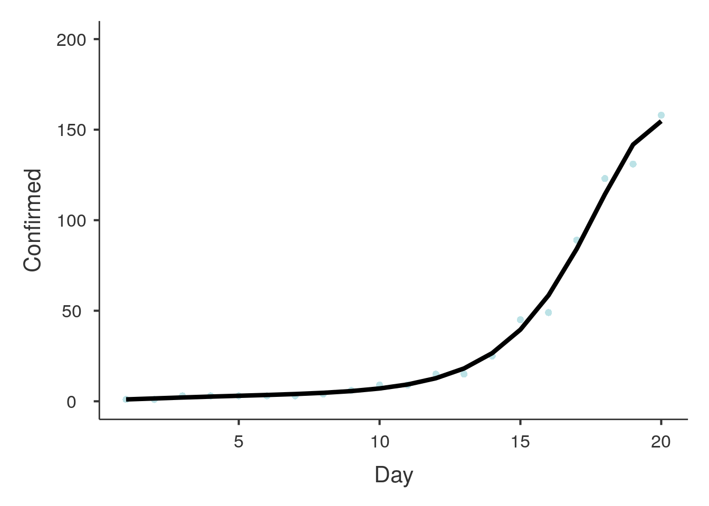
Parameter Estimates
───────────────────────────────────────────────────────────────────────────────────────
Names Estimate SE exp(B) Lower Upper z p
───────────────────────────────────────────────────────────────────────────────────────
(Intercept) -1.0478 1.7500 0.351 0.00538 6.46 -0.599 0.549
Day 0.9677 1.0789 2.632 0.35690 27.37 0.897 0.370
Day² -0.2490 0.2068 0.780 0.50665 1.16 -1.204 0.229
Day³ 0.0247 0.0155 1.025 0.99477 1.06 1.590 0.112
Day⁴ -7.31e-4 4.02e-4 0.999 0.99846 1.00 -1.817 0.069
───────────────────────────────────────────────────────────────────────────────────────
Macau
R^2= 0.9415334
EC= 9
GF= 0.96
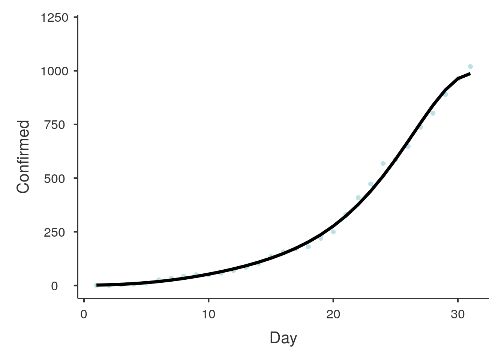
Parameter Estimates
─────────────────────────────────────────────────────────────────────────────────────
Names Estimate SE exp(B) Lower Upper z p
─────────────────────────────────────────────────────────────────────────────────────
(Intercept) 0.0872 0.49158 1.091 0.388 2.680 0.177 0.859
Day 0.3362 0.11033 1.400 1.137 1.754 3.048 0.002
Day² -0.0181 0.00805 0.982 0.966 0.997 -2.244 0.025
Day³ 4.09e-4 2.30e-4 1.000 1.000 1.001 1.780 0.075
Day⁴ -3.31e-6 2.23e-6 1.000 1.000 1.000 -1.487 0.137
─────────────────────────────────────────────────────────────────────────────────────
Mainland China
R^2= 0.9959581
EC= 81493
GF= 1
Parameter Estimates
───────────────────────────────────────────────────────────────────────────────────────────
Names Estimate SE exp(B) Lower Upper z p
───────────────────────────────────────────────────────────────────────────────────────────
(Intercept) 5.6977 0.01513 298.193 289.465 307.154 376.6 < .001
Day 0.4882 0.00239 1.629 1.622 1.637 203.9 < .001
Day² -0.0158 1.31e-4 0.984 0.984 0.985 -120.6 < .001
Day³ 2.26e-4 2.97e-6 1.000 1.000 1.000 76.3 < .001
Day⁴ -1.20e-6 2.35e-8 1.000 1.000 1.000 -51.0 < .001
───────────────────────────────────────────────────────────────────────────────────────────
Malaysia
R^2= 0.9823348
EC= 369
GF= 1.3
Parameter Estimates
──────────────────────────────────────────────────────────────────────────────────────
Names Estimate SE exp(B) Lower Upper z p
──────────────────────────────────────────────────────────────────────────────────────
(Intercept) 0.6638 0.34535 1.942 0.953 3.696 1.922 0.055
Day 0.2698 0.06646 1.310 1.154 1.498 4.059 < .001
Day² -0.0119 0.00417 0.988 0.980 0.996 -2.846 0.004
Day³ 2.12e-4 1.03e-4 1.000 1.000 1.000 2.068 0.039
Day⁴ -8.63e-7 8.67e-7 1.000 1.000 1.000 -0.996 0.319
──────────────────────────────────────────────────────────────────────────────────────
Mexico
R^2= 0.9759216
EC= 41
GF= 1.83
Parameter Estimates
──────────────────────────────────────────────────────────────────────────────────────
Names Estimate SE exp(B) Lower Upper z p
──────────────────────────────────────────────────────────────────────────────────────
(Intercept) 0.06734 1.04764 1.070 0.106 6.77 0.0643 0.949
Day 0.68625 0.63395 1.986 0.609 7.48 1.0825 0.279
Day² -0.09474 0.12273 0.910 0.708 1.15 -0.7720 0.440
Day³ 0.00490 0.00926 1.005 0.987 1.02 0.5286 0.597
Day⁴ -5.62e-5 2.38e-4 1.000 0.999 1.00 -0.2360 0.813
──────────────────────────────────────────────────────────────────────────────────────
Monaco
R^2= 0.869219
EC= 2
GF= 0.95
Parameter Estimates
───────────────────────────────────────────────────────────────────────────────────────
Names Estimate SE exp(B) Lower Upper z p
───────────────────────────────────────────────────────────────────────────────────────
(Intercept) -0.34800 1.9097 0.706 0.00732 17.92 -0.182 0.855
Day 0.36044 1.4036 1.434 0.10063 29.47 0.257 0.797
Day² -0.09829 0.3130 0.906 0.47334 1.66 -0.314 0.753
Day³ 0.00931 0.0266 1.009 0.95846 1.07 0.350 0.726
Day⁴ -2.69e-4 7.60e-4 1.000 0.99819 1.00 -0.355 0.723
───────────────────────────────────────────────────────────────────────────────────────
Morocco
R^2= 0.9862538
EC= 28
GF= 1.95
Parameter Estimates
───────────────────────────────────────────────────────────────────────────────────────
Names Estimate SE exp(B) Lower Upper z p
───────────────────────────────────────────────────────────────────────────────────────
(Intercept) -0.59410 1.9334 0.552 0.00531 14.03 -0.307 0.759
Day 0.52079 1.3939 1.683 0.12660 35.20 0.374 0.709
Day² -0.09046 0.3173 0.914 0.47081 1.68 -0.285 0.776
Day³ 0.00730 0.0282 1.007 0.95385 1.07 0.259 0.796
Day⁴ -1.47e-4 8.57e-4 1.000 0.99812 1.00 -0.172 0.864
───────────────────────────────────────────────────────────────────────────────────────
Nepal
R^2= NaN
EC= 1
GF= 1
Parameter Estimates
─────────────────────────────────────────────────────────────────────────────────────────
Names Estimate SE exp(B) Lower Upper z p
─────────────────────────────────────────────────────────────────────────────────────────
(Intercept) 9.64e-19 0.7913 1.00 0.170 3.95 1.22e-18 1.000
Day 5.45e-19 0.2065 1.00 0.678 1.54 2.64e-18 1.000
Day² -3.38e-20 0.0159 1.00 0.968 1.03 -2.12e-18 1.000
Day³ 8.40e-22 4.58e-4 1.00 0.999 1.00 1.83e-18 1.000
Day⁴ -7.28e-24 4.37e-6 1.00 1.000 1.00 -1.66e-18 1.000
─────────────────────────────────────────────────────────────────────────────────────────
Netherlands
R^2= 0.9946604
EC= 1169
GF= 1.31
Parameter Estimates
──────────────────────────────────────────────────────────────────────────────────────
Names Estimate SE exp(B) Lower Upper z p
──────────────────────────────────────────────────────────────────────────────────────
(Intercept) -1.2634 0.90564 0.283 0.0405 1.42 -1.395 0.163
Day 0.9684 0.36359 2.634 1.3552 5.66 2.664 0.008
Day² -0.0284 0.05185 0.972 0.8732 1.07 -0.547 0.584
Day³ -9.24e-4 0.00311 0.999 0.9932 1.01 -0.297 0.766
Day⁴ 5.22e-5 6.66e-5 1.000 0.9999 1.00 0.785 0.433
──────────────────────────────────────────────────────────────────────────────────────
New Zealand
R^2= 0.9702193
EC= 8
GF= 1.61
Parameter Estimates
──────────────────────────────────────────────────────────────────────────────────────
Names Estimate SE exp(B) Lower Upper z p
──────────────────────────────────────────────────────────────────────────────────────
(Intercept) 0.4191 1.5626 1.521 0.0362 20.88 0.268 0.789
Day -0.6038 0.9720 0.547 0.0885 4.42 -0.621 0.534
Day² 0.1986 0.1906 1.220 0.8244 1.76 1.042 0.297
Day³ -0.0174 0.0145 0.983 0.9552 1.01 -1.195 0.232
Day⁴ 4.78e-4 3.78e-4 1.000 0.9997 1.00 1.265 0.206
──────────────────────────────────────────────────────────────────────────────────────
Nigeria
R^2= 0.8733526
EC= 2
GF= 0.83
Parameter Estimates
────────────────────────────────────────────────────────────────────────────────────────
Names Estimate SE exp(B) Lower Upper z p
────────────────────────────────────────────────────────────────────────────────────────
(Intercept) 0.04891 1.7266 1.050 0.0175 19.92 0.02833 0.977
Day -0.00166 1.2143 0.998 0.0982 13.20 -0.00137 0.999
Day² -0.01598 0.2553 0.984 0.5827 1.62 -0.06258 0.950
Day³ 0.00301 0.0204 1.003 0.9637 1.05 0.14724 0.883
Day⁴ -1.15e-4 5.51e-4 1.000 0.9988 1.00 -0.20804 0.835
────────────────────────────────────────────────────────────────────────────────────────
North Macedonia
R^2= 0.9639835
EC= 15
GF= 1.02
Parameter Estimates
───────────────────────────────────────────────────────────────────────────────────────
Names Estimate SE exp(B) Lower Upper z p
───────────────────────────────────────────────────────────────────────────────────────
(Intercept) 0.05748 1.44443 1.059 0.0352 12.20 0.0398 0.968
Day -0.03071 0.83991 0.970 0.1973 5.74 -0.0366 0.971
Day² -0.00779 0.14669 0.992 0.7357 1.32 -0.0531 0.958
Day³ 0.00256 0.00985 1.003 0.9834 1.02 0.2595 0.795
Day⁴ -8.84e-5 2.25e-4 1.000 0.9995 1.00 -0.3930 0.694
───────────────────────────────────────────────────────────────────────────────────────
Norway
R^2= 0.9955911
EC= 1198
GF= 0.97
Parameter Estimates
──────────────────────────────────────────────────────────────────────────────────────
Names Estimate SE exp(B) Lower Upper z p
──────────────────────────────────────────────────────────────────────────────────────
(Intercept) -1.7238 0.78464 0.178 0.0341 0.743 -2.20 0.028
Day 1.6364 0.31042 5.136 2.8861 9.762 5.27 < .001
Day² -0.1946 0.04285 0.823 0.7542 0.892 -4.54 < .001
Day³ 0.0121 0.00246 1.012 1.0075 1.017 4.92 < .001
Day⁴ -2.70e-4 5.03e-5 1.000 0.9996 1.000 -5.37 < .001
──────────────────────────────────────────────────────────────────────────────────────
Oman
R^2= 0.9652478
EC= 22
GF= 1.19
Parameter Estimates
──────────────────────────────────────────────────────────────────────────────────────
Names Estimate SE exp(B) Lower Upper z p
──────────────────────────────────────────────────────────────────────────────────────
(Intercept) 0.72864 0.83334 2.072 0.333 9.04 0.8744 0.382
Day -0.00677 0.40394 0.993 0.466 2.30 -0.0168 0.987
Day² 0.05058 0.06337 1.052 0.925 1.19 0.7982 0.425
Day³ -0.00414 0.00391 0.996 0.988 1.00 -1.0585 0.290
Day⁴ 9.52e-5 8.24e-5 1.000 1.000 1.00 1.1546 0.248
──────────────────────────────────────────────────────────────────────────────────────
Others
R^2= 0.9834887
EC= 727
GF= 1.04
Parameter Estimates
────────────────────────────────────────────────────────────────────────────────────────
Names Estimate SE exp(B) Lower Upper z p
────────────────────────────────────────────────────────────────────────────────────────
(Intercept) 3.3883 0.11335 29.616 23.633 36.858 29.892 < .001
Day 0.3704 0.03327 1.448 1.358 1.547 11.134 < .001
Day² -0.0124 0.00327 0.988 0.981 0.994 -3.795 < .001
Day³ 4.93e-5 1.28e-4 1.000 1.000 1.000 0.384 0.701
Day⁴ 2.29e-6 1.74e-6 1.000 1.000 1.000 1.320 0.187
────────────────────────────────────────────────────────────────────────────────────────
Pakistan
R^2= 0.9720163
EC= 50
GF= 1.33
Parameter Estimates
─────────────────────────────────────────────────────────────────────────────────────
Names Estimate SE exp(B) Lower Upper z p
─────────────────────────────────────────────────────────────────────────────────────
(Intercept) 0.11033 1.00775 1.117 0.119 6.52 0.109 0.913
Day 0.48066 0.54080 1.617 0.589 5.01 0.889 0.374
Day² -0.06863 0.09199 0.934 0.774 1.11 -0.746 0.456
Day³ 0.00465 0.00611 1.005 0.993 1.02 0.762 0.446
Day⁴ -9.58e-5 1.39e-4 1.000 1.000 1.00 -0.691 0.489
─────────────────────────────────────────────────────────────────────────────────────
Philippines
R^2= 0.9835923
EC= 150
GF= 1.47
Parameter Estimates
─────────────────────────────────────────────────────────────────────────────────────
Names Estimate SE exp(B) Lower Upper z p
─────────────────────────────────────────────────────────────────────────────────────
(Intercept) -1.1614 0.7682 0.313 0.0590 1.220 -1.51 0.131
Day 0.5101 0.1692 1.665 1.2179 2.371 3.01 0.003
Day² -0.0357 0.0119 0.965 0.9416 0.987 -2.99 0.003
Day³ 9.00e-4 3.27e-4 1.001 1.0003 1.002 2.75 0.006
Day⁴ -6.55e-6 3.05e-6 1.000 1.0000 1.000 -2.15 0.032
─────────────────────────────────────────────────────────────────────────────────────
Poland
R^2= 0.9960597
EC= 120
GF= 1.1
Parameter Estimates
───────────────────────────────────────────────────────────────────────────────────────
Names Estimate SE exp(B) Lower Upper z p
───────────────────────────────────────────────────────────────────────────────────────
(Intercept) -1.9526 1.8922 0.142 0.00170 3.29 -1.03 0.302
Day 1.7902 1.2738 5.990 0.62738 100.72 1.41 0.160
Day² -0.3053 0.2938 0.737 0.39304 1.26 -1.04 0.299
Day³ 0.0285 0.0278 1.029 0.97683 1.09 1.03 0.305
Day⁴ -9.68e-4 9.26e-4 0.999 0.99713 1.00 -1.05 0.296
───────────────────────────────────────────────────────────────────────────────────────
Portugal
R^2= 0.9928644
EC= 250
GF= 1.59
Parameter Estimates
──────────────────────────────────────────────────────────────────────────────────────
Names Estimate SE exp(B) Lower Upper z p
──────────────────────────────────────────────────────────────────────────────────────
(Intercept) -1.1339 1.2549 0.322 0.0197 2.84 -0.904 0.366
Day 1.3687 0.7387 3.930 1.0279 19.06 1.853 0.064
Day² -0.1725 0.1485 0.842 0.6176 1.11 -1.161 0.245
Day³ 0.0110 0.0122 1.011 0.9880 1.04 0.903 0.366
Day⁴ -2.33e-4 3.51e-4 1.000 0.9991 1.00 -0.662 0.508
──────────────────────────────────────────────────────────────────────────────────────
Qatar
R^2= 0.9396413
EC= 359
GF= 0.75
Parameter Estimates
─────────────────────────────────────────────────────────────────────────────────────
Names Estimate SE exp(B) Lower Upper z p
─────────────────────────────────────────────────────────────────────────────────────
(Intercept) 1.53815 0.80530 4.656 0.812 19.76 1.910 0.056
Day -0.32058 0.48395 0.726 0.287 1.94 -0.662 0.508
Day² 0.03753 0.08981 1.038 0.868 1.24 0.418 0.676
Day³ 0.00445 0.00654 1.004 0.992 1.02 0.681 0.496
Day⁴ -2.80e-4 1.65e-4 1.000 0.999 1.00 -1.703 0.089
─────────────────────────────────────────────────────────────────────────────────────
Romania
R^2= 0.9926411
EC= 136
GF= 1.1
Parameter Estimates
──────────────────────────────────────────────────────────────────────────────────────
Names Estimate SE exp(B) Lower Upper z p
──────────────────────────────────────────────────────────────────────────────────────
(Intercept) -0.8183 1.18720 0.441 0.0300 3.378 -0.689 0.491
Day 0.8530 0.57077 2.347 0.8248 7.931 1.494 0.135
Day² -0.1375 0.08931 0.872 0.7245 1.031 -1.539 0.124
Day³ 0.0105 0.00557 1.011 0.9998 1.022 1.878 0.060
Day⁴ -2.50e-4 1.21e-4 1.000 0.9995 1.000 -2.078 0.038
──────────────────────────────────────────────────────────────────────────────────────
Russia
R^2= 0.9816258
EC= 70
GF= 1.32
Parameter Estimates
─────────────────────────────────────────────────────────────────────────────────────
Names Estimate SE exp(B) Lower Upper z p
─────────────────────────────────────────────────────────────────────────────────────
(Intercept) 0.1627 0.6222 1.177 0.307 3.58 0.261 0.794
Day 0.2263 0.1642 1.254 0.920 1.76 1.377 0.168
Day² -0.0226 0.0130 0.978 0.952 1.00 -1.730 0.084
Day³ 7.22e-4 3.90e-4 1.001 1.000 1.00 1.850 0.064
Day⁴ -6.33e-6 3.92e-6 1.000 1.000 1.00 -1.616 0.106
─────────────────────────────────────────────────────────────────────────────────────
San Marino
R^2= 0.9833199
EC= 97
GF= 1.08
Parameter Estimates
───────────────────────────────────────────────────────────────────────────────────────
Names Estimate SE exp(B) Lower Upper z p
───────────────────────────────────────────────────────────────────────────────────────
(Intercept) -2.25116 1.49277 0.105 0.00354 1.30 -1.508 0.132
Day 1.29887 0.66222 3.665 1.13735 15.58 1.961 0.050
Day² -0.12437 0.10203 0.883 0.71095 1.06 -1.219 0.223
Day³ 0.00625 0.00649 1.006 0.99421 1.02 0.962 0.336
Day⁴ -1.21e-4 1.46e-4 1.000 0.99958 1.00 -0.828 0.408
───────────────────────────────────────────────────────────────────────────────────────
Saudi Arabia
R^2= 0.985708
EC= 104
GF= 0.82
Parameter Estimates
────────────────────────────────────────────────────────────────────────────────────────
Names Estimate SE exp(B) Lower Upper z p
────────────────────────────────────────────────────────────────────────────────────────
(Intercept) -2.81084 1.9668 0.0602 5.95e-4 1.521 -1.43 0.153
Day 2.24352 1.1448 9.4264 1.264 120.010 1.96 0.050
Day² -0.44040 0.2265 0.6438 0.396 0.972 -1.94 0.052
Day³ 0.04045 0.0183 1.0413 1.006 1.082 2.21 0.027
Day⁴ -0.00127 5.22e-4 0.9987 0.998 1.000 -2.42 0.015
────────────────────────────────────────────────────────────────────────────────────────
Senegal
R^2= 0.9656758
EC= 23
GF= 2.07
Parameter Estimates
───────────────────────────────────────────────────────────────────────────────────────
Names Estimate SE exp(B) Lower Upper z p
───────────────────────────────────────────────────────────────────────────────────────
(Intercept) -1.0649 1.6507 0.345 0.00767 5.71 -0.645 0.519
Day 1.3434 1.1656 3.832 0.45645 47.67 1.153 0.249
Day² -0.2408 0.2682 0.786 0.44863 1.30 -0.898 0.369
Day³ 0.0163 0.0243 1.016 0.97041 1.07 0.670 0.503
Day⁴ -3.14e-4 7.52e-4 1.000 0.99816 1.00 -0.418 0.676
───────────────────────────────────────────────────────────────────────────────────────
Singapore
R^2= 0.9958551
EC= 235
GF= 1.1
Parameter Estimates
──────────────────────────────────────────────────────────────────────────────────────
Names Estimate SE exp(B) Lower Upper z p
──────────────────────────────────────────────────────────────────────────────────────
(Intercept) 0.12924 0.34361 1.138 0.562 2.165 0.376 0.707
Day 0.33564 0.05728 1.399 1.255 1.571 5.860 < .001
Day² -0.00919 0.00327 0.991 0.984 0.997 -2.814 0.005
Day³ 9.63e-5 7.56e-5 1.000 1.000 1.000 1.274 0.203
Day⁴ -1.25e-7 6.10e-7 1.000 1.000 1.000 -0.205 0.838
──────────────────────────────────────────────────────────────────────────────────────
Slovenia
R^2= 0.9956403
EC= 216
GF= 1.02
Parameter Estimates
─────────────────────────────────────────────────────────────────────────────────────
Names Estimate SE exp(B) Lower Upper z p
─────────────────────────────────────────────────────────────────────────────────────
(Intercept) 0.4402 1.1370 1.553 0.130 11.80 0.387 0.699
Day 0.7375 0.8969 2.091 0.389 13.53 0.822 0.411
Day² -0.0990 0.2351 0.906 0.562 1.42 -0.421 0.674
Day³ 0.0144 0.0248 1.015 0.967 1.07 0.580 0.562
Day⁴ -7.10e-4 9.16e-4 0.999 0.997 1.00 -0.775 0.438
─────────────────────────────────────────────────────────────────────────────────────
South Africa
R^2= 0.9942948
EC= 52
GF= 1.49
Parameter Estimates
───────────────────────────────────────────────────────────────────────────────────────
Names Estimate SE exp(B) Lower Upper z p
───────────────────────────────────────────────────────────────────────────────────────
(Intercept) 0.37478 2.18429 1.455 0.00729 59.07 0.172 0.864
Day -0.70246 1.83418 0.495 0.01557 26.74 -0.383 0.702
Day² 0.31369 0.49559 1.368 0.49070 3.59 0.633 0.527
Day³ -0.03219 0.05320 0.968 0.87209 1.08 -0.605 0.545
Day⁴ 0.00111 0.00198 1.001 0.99716 1.01 0.559 0.576
───────────────────────────────────────────────────────────────────────────────────────
South Korea
R^2= 0.9938428
EC= 7739
GF= 0.98
Parameter Estimates
───────────────────────────────────────────────────────────────────────────────────────
Names Estimate SE exp(B) Lower Upper z p
───────────────────────────────────────────────────────────────────────────────────────
(Intercept) 4.12908 0.17181 62.121 43.703 85.821 24.0 < .001
Day -0.93661 0.02982 0.392 0.370 0.416 -31.4 < .001
Day² 0.06188 0.00169 1.064 1.060 1.067 36.6 < .001
Day³ -0.00120 3.64e-5 0.999 0.999 0.999 -32.9 < .001
Day⁴ 7.48e-6 2.68e-7 1.000 1.000 1.000 27.9 < .001
───────────────────────────────────────────────────────────────────────────────────────
Spain
R^2= 0.9944329
EC= 8194
GF= 1.34
Parameter Estimates
─────────────────────────────────────────────────────────────────────────────────────
Names Estimate SE exp(B) Lower Upper z p
─────────────────────────────────────────────────────────────────────────────────────
(Intercept) 0.35769 0.60715 1.430 0.377 4.173 0.589 0.556
Day -0.09792 0.11865 0.907 0.725 1.158 -0.825 0.409
Day² 0.00488 0.00744 1.005 0.990 1.019 0.656 0.512
Day³ 1.83e-4 1.84e-4 1.000 1.000 1.001 0.994 0.320
Day⁴ -3.23e-6 1.59e-6 1.000 1.000 1.000 -2.035 0.042
─────────────────────────────────────────────────────────────────────────────────────
Sri Lanka
R^2= 0.9686082
EC= 17
GF= 1.91
Parameter Estimates
─────────────────────────────────────────────────────────────────────────────────────
Names Estimate SE exp(B) Lower Upper z p
─────────────────────────────────────────────────────────────────────────────────────
(Intercept) 0.5154 0.7332 1.674 0.325 6.003 0.703 0.482
Day -0.2376 0.1968 0.789 0.542 1.182 -1.208 0.227
Day² 0.0252 0.0153 1.026 0.995 1.056 1.649 0.099
Day³ -9.21e-4 4.37e-4 0.999 0.998 1.000 -2.106 0.035
Day⁴ 1.07e-5 4.15e-6 1.000 1.000 1.000 2.588 0.010
─────────────────────────────────────────────────────────────────────────────────────
Sweden
R^2= 0.9976148
EC= 1037
GF= 1.08
Parameter Estimates
───────────────────────────────────────────────────────────────────────────────────────
Names Estimate SE exp(B) Lower Upper z p
───────────────────────────────────────────────────────────────────────────────────────
(Intercept) -0.05196 0.7016 0.949 0.202 3.264 -0.0741 0.941
Day 0.11948 0.1622 1.127 0.826 1.569 0.7366 0.461
Day² -0.02335 0.0107 0.977 0.956 0.997 -2.1877 0.029
Day³ 0.00113 2.70e-4 1.001 1.001 1.002 4.1738 < .001
Day⁴ -1.32e-5 2.36e-6 1.000 1.000 1.000 -5.5681 < .001
───────────────────────────────────────────────────────────────────────────────────────
Switzerland
R^2= 0.9954817
EC= 2190
GF= 1.63
Parameter Estimates
──────────────────────────────────────────────────────────────────────────────────────
Names Estimate SE exp(B) Lower Upper z p
──────────────────────────────────────────────────────────────────────────────────────
(Intercept) 0.11185 0.64123 1.118 0.287 3.575 0.174 0.862
Day 0.40846 0.23932 1.504 0.965 2.473 1.707 0.088
Day² 0.04073 0.03153 1.042 0.977 1.105 1.292 0.196
Day³ -0.00457 0.00173 0.995 0.992 0.999 -2.642 0.008
Day⁴ 1.23e-4 3.37e-5 1.000 1.000 1.000 3.650 < .001
──────────────────────────────────────────────────────────────────────────────────────
Taiwan
R^2= 0.9901642
EC= 44
GF= 0.97
Parameter Estimates
──────────────────────────────────────────────────────────────────────────────────────
Names Estimate SE exp(B) Lower Upper z p
──────────────────────────────────────────────────────────────────────────────────────
(Intercept) -0.0805 0.45892 0.923 0.354 2.147 -0.175 0.861
Day 0.3869 0.09345 1.472 1.234 1.782 4.140 < .001
Day² -0.0202 0.00630 0.980 0.968 0.992 -3.202 0.001
Day³ 4.90e-4 1.69e-4 1.000 1.000 1.001 2.899 0.004
Day⁴ -4.22e-6 1.56e-6 1.000 1.000 1.000 -2.706 0.007
──────────────────────────────────────────────────────────────────────────────────────
Thailand
R^2= 0.9814526
EC= 99
GF= 1.13
Parameter Estimates
──────────────────────────────────────────────────────────────────────────────────────
Names Estimate SE exp(B) Lower Upper z p
──────────────────────────────────────────────────────────────────────────────────────
(Intercept) 0.98951 0.28868 2.690 1.490 4.627 3.428 < .001
Day 0.25184 0.05403 1.286 1.160 1.434 4.661 < .001
Day² -0.00834 0.00333 0.992 0.985 0.998 -2.504 0.012
Day³ 9.87e-5 8.10e-5 1.000 1.000 1.000 1.219 0.223
Day⁴ -1.43e-7 6.73e-7 1.000 1.000 1.000 -0.213 0.832
──────────────────────────────────────────────────────────────────────────────────────
Tunisia
R^2= 0.9775349
EC= 18
GF= 0.89
Parameter Estimates
────────────────────────────────────────────────────────────────────────────────────────
Names Estimate SE exp(B) Lower Upper z p
────────────────────────────────────────────────────────────────────────────────────────
(Intercept) 0.11243 2.15968 1.119 0.00626 45.73 0.0521 0.958
Day -0.17872 1.81233 0.836 0.02565 40.42 -0.0986 0.921
Day² 0.04370 0.47105 1.045 0.39864 2.65 0.0928 0.926
Day³ 0.00370 0.04794 1.004 0.91262 1.11 0.0771 0.939
Day⁴ -3.74e-4 0.00168 1.000 0.99630 1.00 -0.2228 0.824
────────────────────────────────────────────────────────────────────────────────────────
UK
R^2= 0.992905
EC= 401
GF= 1.22
Parameter Estimates
──────────────────────────────────────────────────────────────────────────────────────
Names Estimate SE exp(B) Lower Upper z p
──────────────────────────────────────────────────────────────────────────────────────
(Intercept) -1.93346 0.7555 0.145 0.0289 0.564 -2.56 0.010
Day 0.86730 0.1670 2.380 1.7458 3.365 5.19 < .001
Day² -0.06738 0.0122 0.935 0.9118 0.957 -5.50 < .001
Day³ 0.00211 3.61e-4 1.002 1.0014 1.003 5.86 < .001
Day⁴ -2.12e-5 3.69e-6 1.000 1.0000 1.000 -5.75 < .001
──────────────────────────────────────────────────────────────────────────────────────
Ukraine
R^2= 0.8739437
EC= 3
GF= 0.95
Parameter Estimates
────────────────────────────────────────────────────────────────────────────────────────
Names Estimate SE exp(B) Lower Upper z p
────────────────────────────────────────────────────────────────────────────────────────
(Intercept) -0.70874 2.36318 0.492 0.00164 28.11 -0.300 0.764
Day 0.82743 2.03889 2.287 0.04692 190.53 0.406 0.685
Day² -0.26294 0.54025 0.769 0.24917 2.20 -0.487 0.626
Day³ 0.02944 0.05493 1.030 0.92504 1.15 0.536 0.592
Day⁴ -0.00102 0.00189 0.999 0.99515 1.00 -0.541 0.588
────────────────────────────────────────────────────────────────────────────────────────
United Arab Emirates
R^2= 0.9870867
EC= 101
GF= 1.09
Parameter Estimates
────────────────────────────────────────────────────────────────────────────────────
Names Estimate SE exp(B) Lower Upper z p
────────────────────────────────────────────────────────────────────────────────────
(Intercept) 0.9167 0.38842 2.501 1.114 5.126 2.36 0.018
Day 0.1879 0.08865 1.207 1.019 1.443 2.12 0.034
Day² -0.0127 0.00633 0.987 0.975 0.999 -2.01 0.044
Day³ 3.91e-4 1.75e-4 1.000 1.000 1.001 2.24 0.025
Day⁴ -3.62e-6 1.64e-6 1.000 1.000 1.000 -2.21 0.027
────────────────────────────────────────────────────────────────────────────────────
United Kingdom
R^2= 1
EC= 1144
GF= 0.93
Parameter Estimates
───────────────────────────────────────────────────────────────────────────────────────────────
Names Estimate SE exp(B) Lower Upper z p
───────────────────────────────────────────────────────────────────────────────────────────────
(Intercept) 8.0486 0.6480 3129.3678 882.12965 11193.103 12.42 < .001
Day -3.4847 1.1625 0.0307 0.00312 0.297 -3.00 0.003
Day² 1.9183 0.6781 6.8091 1.80660 25.791 2.83 0.005
Day³ -0.3783 0.1591 0.6850 0.50141 0.935 -2.38 0.017
Day⁴ 0.0252 0.0130 1.0255 0.99978 1.052 1.94 0.052
───────────────────────────────────────────────────────────────────────────────────────────────
US
R^2= 0.9981548
EC= 3582
GF= 1.29
Parameter Estimates
─────────────────────────────────────────────────────────────────────────────────────
Names Estimate SE exp(B) Lower Upper z p
─────────────────────────────────────────────────────────────────────────────────────
(Intercept) -1.1011 0.45233 0.332 0.130 0.770 -2.43 0.015
Day 0.5613 0.07027 1.753 1.535 2.022 7.99 < .001
Day² -0.0312 0.00363 0.969 0.962 0.976 -8.60 < .001
Day³ 7.26e-4 7.59e-5 1.001 1.001 1.001 9.57 < .001
Day⁴ -5.22e-6 5.56e-7 1.000 1.000 1.000 -9.39 < .001
─────────────────────────────────────────────────────────────────────────────────────
Vietnam
R^2= 0.9677965
EC= 65
GF= 1.27
Parameter Estimates
─────────────────────────────────────────────────────────────────────────────────────
Names Estimate SE exp(B) Lower Upper z p
─────────────────────────────────────────────────────────────────────────────────────
(Intercept) -0.31077 0.53623 0.733 0.235 1.94 -0.580 0.562
Day 0.24789 0.09863 1.281 1.066 1.57 2.513 0.012
Day² -0.00452 0.00608 0.995 0.983 1.01 -0.743 0.458
Day³ -6.08e-5 1.49e-4 1.000 1.000 1.00 -0.407 0.684
Day⁴ 1.69e-6 1.26e-6 1.000 1.000 1.00 1.338 0.181
─────────────────────────────────────────────────────────────────────────────────────